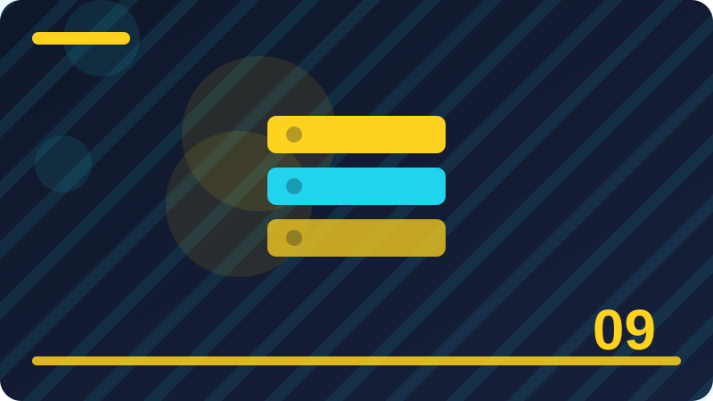

Chapter 9: foreach and Iterating Arrays

This chapter teaches foreach and iterating arrays in PHP through short, practical sections that build on each other step by step.
Section 1: What foreach Is For
This section looks closely at what foreach is for, and it matters because it shapes how a PHP program responds to different values instead of always doing exactly the same thing. When you understand this idea, you can write programs that adapt, choose, and handle real situations rather than only printing fixed text. Beginners often rush past this kind of topic, yet it appears in almost every useful script, from a simple greeting page to a small shop, a quiz, or a membership check. The goal here is not to memorise a trick, but to build a clear mental picture you can reuse whenever a similar problem appears in your own work.
In practice, what foreach is for works by giving PHP a clear rule to follow and a set of values to test against that rule. You supply the data, PHP checks it in order, and the program then follows the path that matches what it finds. That order matters, because the first matching path is usually the one that runs, and later paths are skipped once a match is found. Think of it as a set of labelled doors: PHP opens the door whose label fits the current value, and it does not need to open every other door. Keeping that picture in mind helps you predict behaviour before you run the code.
A helpful way to learn what foreach is for is to start with a tiny, concrete situation you already understand, such as a score, a name, a price, or a simple yes-or-no choice. Write down two or three possible values, decide what should happen for each one, and only then turn those decisions into code. If you can explain the expected result for each value in plain language, the code itself becomes much easier to write and to check. Try the same example with a value at the edge of a range, because edge cases are where small misunderstandings usually show up first.
Common mistakes with what foreach is for usually come from rushing, not from difficulty. Learners sometimes mix up similar symbols, forget a closing brace, compare the wrong variable, or assume PHP will guess what they meant when two options look alike. Another frequent slip is testing only the happy path, the value that works nicely, while forgetting the empty value, the zero, or the unexpected input a real user might send. Slow down, name your variables clearly, and test each path separately, including the path that should handle an unusual or missing value.
As you finish this section, ask yourself when what foreach is for is the clearest choice and when a different structure would read better. The best tool is not always the shortest one; it is the one a reader can follow without pausing to untangle it. Practise by rewriting a small example in two ways and comparing them for readability, then keep the version that explains itself. That habit, repeated across many small programs, is how you move from writing code that merely runs to writing code that is reliable, maintainable, and genuinely useful in a real project.
<?php
$items = ["apple", "banana", "orange"];
foreach ($items as $index => $item) {
echo $index . ": " . $item . "\n";
}
?>Check: In your own words, what does what foreach is for mean, and when would you use it in a small PHP program?
Section 2: foreach Syntax for Values
This section looks closely at foreach syntax for values, and it matters because it shapes how a PHP program responds to different values instead of always doing exactly the same thing. When you understand this idea, you can write programs that adapt, choose, and handle real situations rather than only printing fixed text. Beginners often rush past this kind of topic, yet it appears in almost every useful script, from a simple greeting page to a small shop, a quiz, or a membership check. The goal here is not to memorise a trick, but to build a clear mental picture you can reuse whenever a similar problem appears in your own work.
In practice, foreach syntax for values works by giving PHP a clear rule to follow and a set of values to test against that rule. You supply the data, PHP checks it in order, and the program then follows the path that matches what it finds. That order matters, because the first matching path is usually the one that runs, and later paths are skipped once a match is found. Think of it as a set of labelled doors: PHP opens the door whose label fits the current value, and it does not need to open every other door. Keeping that picture in mind helps you predict behaviour before you run the code.
A helpful way to learn foreach syntax for values is to start with a tiny, concrete situation you already understand, such as a score, a name, a price, or a simple yes-or-no choice. Write down two or three possible values, decide what should happen for each one, and only then turn those decisions into code. If you can explain the expected result for each value in plain language, the code itself becomes much easier to write and to check. Try the same example with a value at the edge of a range, because edge cases are where small misunderstandings usually show up first.
Common mistakes with foreach syntax for values usually come from rushing, not from difficulty. Learners sometimes mix up similar symbols, forget a closing brace, compare the wrong variable, or assume PHP will guess what they meant when two options look alike. Another frequent slip is testing only the happy path, the value that works nicely, while forgetting the empty value, the zero, or the unexpected input a real user might send. Slow down, name your variables clearly, and test each path separately, including the path that should handle an unusual or missing value.
As you finish this section, ask yourself when foreach syntax for values is the clearest choice and when a different structure would read better. The best tool is not always the shortest one; it is the one a reader can follow without pausing to untangle it. Practise by rewriting a small example in two ways and comparing them for readability, then keep the version that explains itself. That habit, repeated across many small programs, is how you move from writing code that merely runs to writing code that is reliable, maintainable, and genuinely useful in a real project.
<?php
$items = ["apple", "banana", "orange"];
foreach ($items as $index => $item) {
echo $index . ": " . $item . "\n";
}
?>Check: In your own words, what does foreach syntax for values mean, and when would you use it in a small PHP program?
Section 3: foreach with Keys and Values
This section looks closely at foreach with keys and values, and it matters because it shapes how a PHP program responds to different values instead of always doing exactly the same thing. When you understand this idea, you can write programs that adapt, choose, and handle real situations rather than only printing fixed text. Beginners often rush past this kind of topic, yet it appears in almost every useful script, from a simple greeting page to a small shop, a quiz, or a membership check. The goal here is not to memorise a trick, but to build a clear mental picture you can reuse whenever a similar problem appears in your own work.
In practice, foreach with keys and values works by giving PHP a clear rule to follow and a set of values to test against that rule. You supply the data, PHP checks it in order, and the program then follows the path that matches what it finds. That order matters, because the first matching path is usually the one that runs, and later paths are skipped once a match is found. Think of it as a set of labelled doors: PHP opens the door whose label fits the current value, and it does not need to open every other door. Keeping that picture in mind helps you predict behaviour before you run the code.
A helpful way to learn foreach with keys and values is to start with a tiny, concrete situation you already understand, such as a score, a name, a price, or a simple yes-or-no choice. Write down two or three possible values, decide what should happen for each one, and only then turn those decisions into code. If you can explain the expected result for each value in plain language, the code itself becomes much easier to write and to check. Try the same example with a value at the edge of a range, because edge cases are where small misunderstandings usually show up first.
Common mistakes with foreach with keys and values usually come from rushing, not from difficulty. Learners sometimes mix up similar symbols, forget a closing brace, compare the wrong variable, or assume PHP will guess what they meant when two options look alike. Another frequent slip is testing only the happy path, the value that works nicely, while forgetting the empty value, the zero, or the unexpected input a real user might send. Slow down, name your variables clearly, and test each path separately, including the path that should handle an unusual or missing value.
As you finish this section, ask yourself when foreach with keys and values is the clearest choice and when a different structure would read better. The best tool is not always the shortest one; it is the one a reader can follow without pausing to untangle it. Practise by rewriting a small example in two ways and comparing them for readability, then keep the version that explains itself. That habit, repeated across many small programs, is how you move from writing code that merely runs to writing code that is reliable, maintainable, and genuinely useful in a real project.
<?php
$items = ["apple", "banana", "orange"];
foreach ($items as $index => $item) {
echo $index . ": " . $item . "\n";
}
?>Check: In your own words, what does foreach with keys and values mean, and when would you use it in a small PHP program?
Section 4: How foreach Reads an Array
This section looks closely at how foreach reads an array, and it matters because it shapes how a PHP program responds to different values instead of always doing exactly the same thing. When you understand this idea, you can write programs that adapt, choose, and handle real situations rather than only printing fixed text. Beginners often rush past this kind of topic, yet it appears in almost every useful script, from a simple greeting page to a small shop, a quiz, or a membership check. The goal here is not to memorise a trick, but to build a clear mental picture you can reuse whenever a similar problem appears in your own work.
In practice, how foreach reads an array works by giving PHP a clear rule to follow and a set of values to test against that rule. You supply the data, PHP checks it in order, and the program then follows the path that matches what it finds. That order matters, because the first matching path is usually the one that runs, and later paths are skipped once a match is found. Think of it as a set of labelled doors: PHP opens the door whose label fits the current value, and it does not need to open every other door. Keeping that picture in mind helps you predict behaviour before you run the code.
A helpful way to learn how foreach reads an array is to start with a tiny, concrete situation you already understand, such as a score, a name, a price, or a simple yes-or-no choice. Write down two or three possible values, decide what should happen for each one, and only then turn those decisions into code. If you can explain the expected result for each value in plain language, the code itself becomes much easier to write and to check. Try the same example with a value at the edge of a range, because edge cases are where small misunderstandings usually show up first.
Common mistakes with how foreach reads an array usually come from rushing, not from difficulty. Learners sometimes mix up similar symbols, forget a closing brace, compare the wrong variable, or assume PHP will guess what they meant when two options look alike. Another frequent slip is testing only the happy path, the value that works nicely, while forgetting the empty value, the zero, or the unexpected input a real user might send. Slow down, name your variables clearly, and test each path separately, including the path that should handle an unusual or missing value.
As you finish this section, ask yourself when how foreach reads an array is the clearest choice and when a different structure would read better. The best tool is not always the shortest one; it is the one a reader can follow without pausing to untangle it. Practise by rewriting a small example in two ways and comparing them for readability, then keep the version that explains itself. That habit, repeated across many small programs, is how you move from writing code that merely runs to writing code that is reliable, maintainable, and genuinely useful in a real project.
<?php
$items = ["apple", "banana", "orange"];
foreach ($items as $index => $item) {
echo $index . ": " . $item . "\n";
}
?>Check: In your own words, what does how foreach reads an array mean, and when would you use it in a small PHP program?
Section 5: Iterating Indexed Arrays
This section looks closely at iterating indexed arrays, and it matters because it shapes how a PHP program responds to different values instead of always doing exactly the same thing. When you understand this idea, you can write programs that adapt, choose, and handle real situations rather than only printing fixed text. Beginners often rush past this kind of topic, yet it appears in almost every useful script, from a simple greeting page to a small shop, a quiz, or a membership check. The goal here is not to memorise a trick, but to build a clear mental picture you can reuse whenever a similar problem appears in your own work.
In practice, iterating indexed arrays works by giving PHP a clear rule to follow and a set of values to test against that rule. You supply the data, PHP checks it in order, and the program then follows the path that matches what it finds. That order matters, because the first matching path is usually the one that runs, and later paths are skipped once a match is found. Think of it as a set of labelled doors: PHP opens the door whose label fits the current value, and it does not need to open every other door. Keeping that picture in mind helps you predict behaviour before you run the code.
A helpful way to learn iterating indexed arrays is to start with a tiny, concrete situation you already understand, such as a score, a name, a price, or a simple yes-or-no choice. Write down two or three possible values, decide what should happen for each one, and only then turn those decisions into code. If you can explain the expected result for each value in plain language, the code itself becomes much easier to write and to check. Try the same example with a value at the edge of a range, because edge cases are where small misunderstandings usually show up first.
Common mistakes with iterating indexed arrays usually come from rushing, not from difficulty. Learners sometimes mix up similar symbols, forget a closing brace, compare the wrong variable, or assume PHP will guess what they meant when two options look alike. Another frequent slip is testing only the happy path, the value that works nicely, while forgetting the empty value, the zero, or the unexpected input a real user might send. Slow down, name your variables clearly, and test each path separately, including the path that should handle an unusual or missing value.
As you finish this section, ask yourself when iterating indexed arrays is the clearest choice and when a different structure would read better. The best tool is not always the shortest one; it is the one a reader can follow without pausing to untangle it. Practise by rewriting a small example in two ways and comparing them for readability, then keep the version that explains itself. That habit, repeated across many small programs, is how you move from writing code that merely runs to writing code that is reliable, maintainable, and genuinely useful in a real project.
<?php
$items = ["apple", "banana", "orange"];
foreach ($items as $index => $item) {
echo $index . ": " . $item . "\n";
}
?>Check: In your own words, what does iterating indexed arrays mean, and when would you use it in a small PHP program?
Section 6: Iterating Associative Arrays
This section looks closely at iterating associative arrays, and it matters because it shapes how a PHP program responds to different values instead of always doing exactly the same thing. When you understand this idea, you can write programs that adapt, choose, and handle real situations rather than only printing fixed text. Beginners often rush past this kind of topic, yet it appears in almost every useful script, from a simple greeting page to a small shop, a quiz, or a membership check. The goal here is not to memorise a trick, but to build a clear mental picture you can reuse whenever a similar problem appears in your own work.
In practice, iterating associative arrays works by giving PHP a clear rule to follow and a set of values to test against that rule. You supply the data, PHP checks it in order, and the program then follows the path that matches what it finds. That order matters, because the first matching path is usually the one that runs, and later paths are skipped once a match is found. Think of it as a set of labelled doors: PHP opens the door whose label fits the current value, and it does not need to open every other door. Keeping that picture in mind helps you predict behaviour before you run the code.
A helpful way to learn iterating associative arrays is to start with a tiny, concrete situation you already understand, such as a score, a name, a price, or a simple yes-or-no choice. Write down two or three possible values, decide what should happen for each one, and only then turn those decisions into code. If you can explain the expected result for each value in plain language, the code itself becomes much easier to write and to check. Try the same example with a value at the edge of a range, because edge cases are where small misunderstandings usually show up first.
Common mistakes with iterating associative arrays usually come from rushing, not from difficulty. Learners sometimes mix up similar symbols, forget a closing brace, compare the wrong variable, or assume PHP will guess what they meant when two options look alike. Another frequent slip is testing only the happy path, the value that works nicely, while forgetting the empty value, the zero, or the unexpected input a real user might send. Slow down, name your variables clearly, and test each path separately, including the path that should handle an unusual or missing value.
As you finish this section, ask yourself when iterating associative arrays is the clearest choice and when a different structure would read better. The best tool is not always the shortest one; it is the one a reader can follow without pausing to untangle it. Practise by rewriting a small example in two ways and comparing them for readability, then keep the version that explains itself. That habit, repeated across many small programs, is how you move from writing code that merely runs to writing code that is reliable, maintainable, and genuinely useful in a real project.
<?php
$items = ["apple", "banana", "orange"];
foreach ($items as $index => $item) {
echo $index . ": " . $item . "\n";
}
?>Check: In your own words, what does iterating associative arrays mean, and when would you use it in a small PHP program?
Section 7: foreach and Array Order
This section looks closely at foreach and array order, and it matters because it shapes how a PHP program responds to different values instead of always doing exactly the same thing. When you understand this idea, you can write programs that adapt, choose, and handle real situations rather than only printing fixed text. Beginners often rush past this kind of topic, yet it appears in almost every useful script, from a simple greeting page to a small shop, a quiz, or a membership check. The goal here is not to memorise a trick, but to build a clear mental picture you can reuse whenever a similar problem appears in your own work.
In practice, foreach and array order works by giving PHP a clear rule to follow and a set of values to test against that rule. You supply the data, PHP checks it in order, and the program then follows the path that matches what it finds. That order matters, because the first matching path is usually the one that runs, and later paths are skipped once a match is found. Think of it as a set of labelled doors: PHP opens the door whose label fits the current value, and it does not need to open every other door. Keeping that picture in mind helps you predict behaviour before you run the code.
A helpful way to learn foreach and array order is to start with a tiny, concrete situation you already understand, such as a score, a name, a price, or a simple yes-or-no choice. Write down two or three possible values, decide what should happen for each one, and only then turn those decisions into code. If you can explain the expected result for each value in plain language, the code itself becomes much easier to write and to check. Try the same example with a value at the edge of a range, because edge cases are where small misunderstandings usually show up first.
Common mistakes with foreach and array order usually come from rushing, not from difficulty. Learners sometimes mix up similar symbols, forget a closing brace, compare the wrong variable, or assume PHP will guess what they meant when two options look alike. Another frequent slip is testing only the happy path, the value that works nicely, while forgetting the empty value, the zero, or the unexpected input a real user might send. Slow down, name your variables clearly, and test each path separately, including the path that should handle an unusual or missing value.
As you finish this section, ask yourself when foreach and array order is the clearest choice and when a different structure would read better. The best tool is not always the shortest one; it is the one a reader can follow without pausing to untangle it. Practise by rewriting a small example in two ways and comparing them for readability, then keep the version that explains itself. That habit, repeated across many small programs, is how you move from writing code that merely runs to writing code that is reliable, maintainable, and genuinely useful in a real project.
<?php
$items = ["apple", "banana", "orange"];
foreach ($items as $index => $item) {
echo $index . ": " . $item . "\n";
}
?>Check: In your own words, what does foreach and array order mean, and when would you use it in a small PHP program?
Section 8: Modifying Values by Reference Preview
This section looks closely at modifying values by reference preview, and it matters because it shapes how a PHP program responds to different values instead of always doing exactly the same thing. When you understand this idea, you can write programs that adapt, choose, and handle real situations rather than only printing fixed text. Beginners often rush past this kind of topic, yet it appears in almost every useful script, from a simple greeting page to a small shop, a quiz, or a membership check. The goal here is not to memorise a trick, but to build a clear mental picture you can reuse whenever a similar problem appears in your own work.
In practice, modifying values by reference preview works by giving PHP a clear rule to follow and a set of values to test against that rule. You supply the data, PHP checks it in order, and the program then follows the path that matches what it finds. That order matters, because the first matching path is usually the one that runs, and later paths are skipped once a match is found. Think of it as a set of labelled doors: PHP opens the door whose label fits the current value, and it does not need to open every other door. Keeping that picture in mind helps you predict behaviour before you run the code.
A helpful way to learn modifying values by reference preview is to start with a tiny, concrete situation you already understand, such as a score, a name, a price, or a simple yes-or-no choice. Write down two or three possible values, decide what should happen for each one, and only then turn those decisions into code. If you can explain the expected result for each value in plain language, the code itself becomes much easier to write and to check. Try the same example with a value at the edge of a range, because edge cases are where small misunderstandings usually show up first.
Common mistakes with modifying values by reference preview usually come from rushing, not from difficulty. Learners sometimes mix up similar symbols, forget a closing brace, compare the wrong variable, or assume PHP will guess what they meant when two options look alike. Another frequent slip is testing only the happy path, the value that works nicely, while forgetting the empty value, the zero, or the unexpected input a real user might send. Slow down, name your variables clearly, and test each path separately, including the path that should handle an unusual or missing value.
As you finish this section, ask yourself when modifying values by reference preview is the clearest choice and when a different structure would read better. The best tool is not always the shortest one; it is the one a reader can follow without pausing to untangle it. Practise by rewriting a small example in two ways and comparing them for readability, then keep the version that explains itself. That habit, repeated across many small programs, is how you move from writing code that merely runs to writing code that is reliable, maintainable, and genuinely useful in a real project.
<?php
$items = ["apple", "banana", "orange"];
foreach ($items as $index => $item) {
echo $index . ": " . $item . "\n";
}
?>Check: In your own words, what does modifying values by reference preview mean, and when would you use it in a small PHP program?
Section 9: Why Copy Versus Reference Matters
This section looks closely at why copy versus reference matters, and it matters because it shapes how a PHP program responds to different values instead of always doing exactly the same thing. When you understand this idea, you can write programs that adapt, choose, and handle real situations rather than only printing fixed text. Beginners often rush past this kind of topic, yet it appears in almost every useful script, from a simple greeting page to a small shop, a quiz, or a membership check. The goal here is not to memorise a trick, but to build a clear mental picture you can reuse whenever a similar problem appears in your own work.
In practice, why copy versus reference matters works by giving PHP a clear rule to follow and a set of values to test against that rule. You supply the data, PHP checks it in order, and the program then follows the path that matches what it finds. That order matters, because the first matching path is usually the one that runs, and later paths are skipped once a match is found. Think of it as a set of labelled doors: PHP opens the door whose label fits the current value, and it does not need to open every other door. Keeping that picture in mind helps you predict behaviour before you run the code.
A helpful way to learn why copy versus reference matters is to start with a tiny, concrete situation you already understand, such as a score, a name, a price, or a simple yes-or-no choice. Write down two or three possible values, decide what should happen for each one, and only then turn those decisions into code. If you can explain the expected result for each value in plain language, the code itself becomes much easier to write and to check. Try the same example with a value at the edge of a range, because edge cases are where small misunderstandings usually show up first.
Common mistakes with why copy versus reference matters usually come from rushing, not from difficulty. Learners sometimes mix up similar symbols, forget a closing brace, compare the wrong variable, or assume PHP will guess what they meant when two options look alike. Another frequent slip is testing only the happy path, the value that works nicely, while forgetting the empty value, the zero, or the unexpected input a real user might send. Slow down, name your variables clearly, and test each path separately, including the path that should handle an unusual or missing value.
As you finish this section, ask yourself when why copy versus reference matters is the clearest choice and when a different structure would read better. The best tool is not always the shortest one; it is the one a reader can follow without pausing to untangle it. Practise by rewriting a small example in two ways and comparing them for readability, then keep the version that explains itself. That habit, repeated across many small programs, is how you move from writing code that merely runs to writing code that is reliable, maintainable, and genuinely useful in a real project.
<?php
$items = ["apple", "banana", "orange"];
foreach ($items as $index => $item) {
echo $index . ": " . $item . "\n";
}
?>Check: In your own words, what does why copy versus reference matters mean, and when would you use it in a small PHP program?
Section 10: foreach Inside Functions Preview
This section looks closely at foreach inside functions preview, and it matters because it shapes how a PHP program responds to different values instead of always doing exactly the same thing. When you understand this idea, you can write programs that adapt, choose, and handle real situations rather than only printing fixed text. Beginners often rush past this kind of topic, yet it appears in almost every useful script, from a simple greeting page to a small shop, a quiz, or a membership check. The goal here is not to memorise a trick, but to build a clear mental picture you can reuse whenever a similar problem appears in your own work.
In practice, foreach inside functions preview works by giving PHP a clear rule to follow and a set of values to test against that rule. You supply the data, PHP checks it in order, and the program then follows the path that matches what it finds. That order matters, because the first matching path is usually the one that runs, and later paths are skipped once a match is found. Think of it as a set of labelled doors: PHP opens the door whose label fits the current value, and it does not need to open every other door. Keeping that picture in mind helps you predict behaviour before you run the code.
A helpful way to learn foreach inside functions preview is to start with a tiny, concrete situation you already understand, such as a score, a name, a price, or a simple yes-or-no choice. Write down two or three possible values, decide what should happen for each one, and only then turn those decisions into code. If you can explain the expected result for each value in plain language, the code itself becomes much easier to write and to check. Try the same example with a value at the edge of a range, because edge cases are where small misunderstandings usually show up first.
Common mistakes with foreach inside functions preview usually come from rushing, not from difficulty. Learners sometimes mix up similar symbols, forget a closing brace, compare the wrong variable, or assume PHP will guess what they meant when two options look alike. Another frequent slip is testing only the happy path, the value that works nicely, while forgetting the empty value, the zero, or the unexpected input a real user might send. Slow down, name your variables clearly, and test each path separately, including the path that should handle an unusual or missing value.
As you finish this section, ask yourself when foreach inside functions preview is the clearest choice and when a different structure would read better. The best tool is not always the shortest one; it is the one a reader can follow without pausing to untangle it. Practise by rewriting a small example in two ways and comparing them for readability, then keep the version that explains itself. That habit, repeated across many small programs, is how you move from writing code that merely runs to writing code that is reliable, maintainable, and genuinely useful in a real project.
<?php
$items = ["apple", "banana", "orange"];
foreach ($items as $index => $item) {
echo $index . ": " . $item . "\n";
}
?>Check: In your own words, what does foreach inside functions preview mean, and when would you use it in a small PHP program?
Section 11: Nested foreach Loops
This section looks closely at nested foreach loops, and it matters because it shapes how a PHP program responds to different values instead of always doing exactly the same thing. When you understand this idea, you can write programs that adapt, choose, and handle real situations rather than only printing fixed text. Beginners often rush past this kind of topic, yet it appears in almost every useful script, from a simple greeting page to a small shop, a quiz, or a membership check. The goal here is not to memorise a trick, but to build a clear mental picture you can reuse whenever a similar problem appears in your own work.
In practice, nested foreach loops works by giving PHP a clear rule to follow and a set of values to test against that rule. You supply the data, PHP checks it in order, and the program then follows the path that matches what it finds. That order matters, because the first matching path is usually the one that runs, and later paths are skipped once a match is found. Think of it as a set of labelled doors: PHP opens the door whose label fits the current value, and it does not need to open every other door. Keeping that picture in mind helps you predict behaviour before you run the code.
A helpful way to learn nested foreach loops is to start with a tiny, concrete situation you already understand, such as a score, a name, a price, or a simple yes-or-no choice. Write down two or three possible values, decide what should happen for each one, and only then turn those decisions into code. If you can explain the expected result for each value in plain language, the code itself becomes much easier to write and to check. Try the same example with a value at the edge of a range, because edge cases are where small misunderstandings usually show up first.
Common mistakes with nested foreach loops usually come from rushing, not from difficulty. Learners sometimes mix up similar symbols, forget a closing brace, compare the wrong variable, or assume PHP will guess what they meant when two options look alike. Another frequent slip is testing only the happy path, the value that works nicely, while forgetting the empty value, the zero, or the unexpected input a real user might send. Slow down, name your variables clearly, and test each path separately, including the path that should handle an unusual or missing value.
As you finish this section, ask yourself when nested foreach loops is the clearest choice and when a different structure would read better. The best tool is not always the shortest one; it is the one a reader can follow without pausing to untangle it. Practise by rewriting a small example in two ways and comparing them for readability, then keep the version that explains itself. That habit, repeated across many small programs, is how you move from writing code that merely runs to writing code that is reliable, maintainable, and genuinely useful in a real project.
<?php
$items = ["apple", "banana", "orange"];
foreach ($items as $index => $item) {
echo $index . ": " . $item . "\n";
}
?>Check: In your own words, what does nested foreach loops mean, and when would you use it in a small PHP program?
Section 12: foreach for Lists of Names
This section looks closely at foreach for lists of names, and it matters because it shapes how a PHP program responds to different values instead of always doing exactly the same thing. When you understand this idea, you can write programs that adapt, choose, and handle real situations rather than only printing fixed text. Beginners often rush past this kind of topic, yet it appears in almost every useful script, from a simple greeting page to a small shop, a quiz, or a membership check. The goal here is not to memorise a trick, but to build a clear mental picture you can reuse whenever a similar problem appears in your own work.
In practice, foreach for lists of names works by giving PHP a clear rule to follow and a set of values to test against that rule. You supply the data, PHP checks it in order, and the program then follows the path that matches what it finds. That order matters, because the first matching path is usually the one that runs, and later paths are skipped once a match is found. Think of it as a set of labelled doors: PHP opens the door whose label fits the current value, and it does not need to open every other door. Keeping that picture in mind helps you predict behaviour before you run the code.
A helpful way to learn foreach for lists of names is to start with a tiny, concrete situation you already understand, such as a score, a name, a price, or a simple yes-or-no choice. Write down two or three possible values, decide what should happen for each one, and only then turn those decisions into code. If you can explain the expected result for each value in plain language, the code itself becomes much easier to write and to check. Try the same example with a value at the edge of a range, because edge cases are where small misunderstandings usually show up first.
Common mistakes with foreach for lists of names usually come from rushing, not from difficulty. Learners sometimes mix up similar symbols, forget a closing brace, compare the wrong variable, or assume PHP will guess what they meant when two options look alike. Another frequent slip is testing only the happy path, the value that works nicely, while forgetting the empty value, the zero, or the unexpected input a real user might send. Slow down, name your variables clearly, and test each path separately, including the path that should handle an unusual or missing value.
As you finish this section, ask yourself when foreach for lists of names is the clearest choice and when a different structure would read better. The best tool is not always the shortest one; it is the one a reader can follow without pausing to untangle it. Practise by rewriting a small example in two ways and comparing them for readability, then keep the version that explains itself. That habit, repeated across many small programs, is how you move from writing code that merely runs to writing code that is reliable, maintainable, and genuinely useful in a real project.
<?php
$items = ["apple", "banana", "orange"];
foreach ($items as $index => $item) {
echo $index . ": " . $item . "\n";
}
?>Check: In your own words, what does foreach for lists of names mean, and when would you use it in a small PHP program?
Section 13: foreach for Prices and Totals
This section looks closely at foreach for prices and totals, and it matters because it shapes how a PHP program responds to different values instead of always doing exactly the same thing. When you understand this idea, you can write programs that adapt, choose, and handle real situations rather than only printing fixed text. Beginners often rush past this kind of topic, yet it appears in almost every useful script, from a simple greeting page to a small shop, a quiz, or a membership check. The goal here is not to memorise a trick, but to build a clear mental picture you can reuse whenever a similar problem appears in your own work.
In practice, foreach for prices and totals works by giving PHP a clear rule to follow and a set of values to test against that rule. You supply the data, PHP checks it in order, and the program then follows the path that matches what it finds. That order matters, because the first matching path is usually the one that runs, and later paths are skipped once a match is found. Think of it as a set of labelled doors: PHP opens the door whose label fits the current value, and it does not need to open every other door. Keeping that picture in mind helps you predict behaviour before you run the code.
A helpful way to learn foreach for prices and totals is to start with a tiny, concrete situation you already understand, such as a score, a name, a price, or a simple yes-or-no choice. Write down two or three possible values, decide what should happen for each one, and only then turn those decisions into code. If you can explain the expected result for each value in plain language, the code itself becomes much easier to write and to check. Try the same example with a value at the edge of a range, because edge cases are where small misunderstandings usually show up first.
Common mistakes with foreach for prices and totals usually come from rushing, not from difficulty. Learners sometimes mix up similar symbols, forget a closing brace, compare the wrong variable, or assume PHP will guess what they meant when two options look alike. Another frequent slip is testing only the happy path, the value that works nicely, while forgetting the empty value, the zero, or the unexpected input a real user might send. Slow down, name your variables clearly, and test each path separately, including the path that should handle an unusual or missing value.
As you finish this section, ask yourself when foreach for prices and totals is the clearest choice and when a different structure would read better. The best tool is not always the shortest one; it is the one a reader can follow without pausing to untangle it. Practise by rewriting a small example in two ways and comparing them for readability, then keep the version that explains itself. That habit, repeated across many small programs, is how you move from writing code that merely runs to writing code that is reliable, maintainable, and genuinely useful in a real project.
<?php
$items = ["apple", "banana", "orange"];
foreach ($items as $index => $item) {
echo $index . ": " . $item . "\n";
}
?>Check: In your own words, what does foreach for prices and totals mean, and when would you use it in a small PHP program?
Section 14: foreach for Scores and Averages
This section looks closely at foreach for scores and averages, and it matters because it shapes how a PHP program responds to different values instead of always doing exactly the same thing. When you understand this idea, you can write programs that adapt, choose, and handle real situations rather than only printing fixed text. Beginners often rush past this kind of topic, yet it appears in almost every useful script, from a simple greeting page to a small shop, a quiz, or a membership check. The goal here is not to memorise a trick, but to build a clear mental picture you can reuse whenever a similar problem appears in your own work.
In practice, foreach for scores and averages works by giving PHP a clear rule to follow and a set of values to test against that rule. You supply the data, PHP checks it in order, and the program then follows the path that matches what it finds. That order matters, because the first matching path is usually the one that runs, and later paths are skipped once a match is found. Think of it as a set of labelled doors: PHP opens the door whose label fits the current value, and it does not need to open every other door. Keeping that picture in mind helps you predict behaviour before you run the code.
A helpful way to learn foreach for scores and averages is to start with a tiny, concrete situation you already understand, such as a score, a name, a price, or a simple yes-or-no choice. Write down two or three possible values, decide what should happen for each one, and only then turn those decisions into code. If you can explain the expected result for each value in plain language, the code itself becomes much easier to write and to check. Try the same example with a value at the edge of a range, because edge cases are where small misunderstandings usually show up first.
Common mistakes with foreach for scores and averages usually come from rushing, not from difficulty. Learners sometimes mix up similar symbols, forget a closing brace, compare the wrong variable, or assume PHP will guess what they meant when two options look alike. Another frequent slip is testing only the happy path, the value that works nicely, while forgetting the empty value, the zero, or the unexpected input a real user might send. Slow down, name your variables clearly, and test each path separately, including the path that should handle an unusual or missing value.
As you finish this section, ask yourself when foreach for scores and averages is the clearest choice and when a different structure would read better. The best tool is not always the shortest one; it is the one a reader can follow without pausing to untangle it. Practise by rewriting a small example in two ways and comparing them for readability, then keep the version that explains itself. That habit, repeated across many small programs, is how you move from writing code that merely runs to writing code that is reliable, maintainable, and genuinely useful in a real project.
<?php
$items = ["apple", "banana", "orange"];
foreach ($items as $index => $item) {
echo $index . ": " . $item . "\n";
}
?>Check: In your own words, what does foreach for scores and averages mean, and when would you use it in a small PHP program?
Section 15: foreach for User Records
This section looks closely at foreach for user records, and it matters because it shapes how a PHP program responds to different values instead of always doing exactly the same thing. When you understand this idea, you can write programs that adapt, choose, and handle real situations rather than only printing fixed text. Beginners often rush past this kind of topic, yet it appears in almost every useful script, from a simple greeting page to a small shop, a quiz, or a membership check. The goal here is not to memorise a trick, but to build a clear mental picture you can reuse whenever a similar problem appears in your own work.
In practice, foreach for user records works by giving PHP a clear rule to follow and a set of values to test against that rule. You supply the data, PHP checks it in order, and the program then follows the path that matches what it finds. That order matters, because the first matching path is usually the one that runs, and later paths are skipped once a match is found. Think of it as a set of labelled doors: PHP opens the door whose label fits the current value, and it does not need to open every other door. Keeping that picture in mind helps you predict behaviour before you run the code.
A helpful way to learn foreach for user records is to start with a tiny, concrete situation you already understand, such as a score, a name, a price, or a simple yes-or-no choice. Write down two or three possible values, decide what should happen for each one, and only then turn those decisions into code. If you can explain the expected result for each value in plain language, the code itself becomes much easier to write and to check. Try the same example with a value at the edge of a range, because edge cases are where small misunderstandings usually show up first.
Common mistakes with foreach for user records usually come from rushing, not from difficulty. Learners sometimes mix up similar symbols, forget a closing brace, compare the wrong variable, or assume PHP will guess what they meant when two options look alike. Another frequent slip is testing only the happy path, the value that works nicely, while forgetting the empty value, the zero, or the unexpected input a real user might send. Slow down, name your variables clearly, and test each path separately, including the path that should handle an unusual or missing value.
As you finish this section, ask yourself when foreach for user records is the clearest choice and when a different structure would read better. The best tool is not always the shortest one; it is the one a reader can follow without pausing to untangle it. Practise by rewriting a small example in two ways and comparing them for readability, then keep the version that explains itself. That habit, repeated across many small programs, is how you move from writing code that merely runs to writing code that is reliable, maintainable, and genuinely useful in a real project.
<?php
$items = ["apple", "banana", "orange"];
foreach ($items as $index => $item) {
echo $index . ": " . $item . "\n";
}
?>Check: In your own words, what does foreach for user records mean, and when would you use it in a small PHP program?
Section 16: foreach for Product Catalogues
This section looks closely at foreach for product catalogues, and it matters because it shapes how a PHP program responds to different values instead of always doing exactly the same thing. When you understand this idea, you can write programs that adapt, choose, and handle real situations rather than only printing fixed text. Beginners often rush past this kind of topic, yet it appears in almost every useful script, from a simple greeting page to a small shop, a quiz, or a membership check. The goal here is not to memorise a trick, but to build a clear mental picture you can reuse whenever a similar problem appears in your own work.
In practice, foreach for product catalogues works by giving PHP a clear rule to follow and a set of values to test against that rule. You supply the data, PHP checks it in order, and the program then follows the path that matches what it finds. That order matters, because the first matching path is usually the one that runs, and later paths are skipped once a match is found. Think of it as a set of labelled doors: PHP opens the door whose label fits the current value, and it does not need to open every other door. Keeping that picture in mind helps you predict behaviour before you run the code.
A helpful way to learn foreach for product catalogues is to start with a tiny, concrete situation you already understand, such as a score, a name, a price, or a simple yes-or-no choice. Write down two or three possible values, decide what should happen for each one, and only then turn those decisions into code. If you can explain the expected result for each value in plain language, the code itself becomes much easier to write and to check. Try the same example with a value at the edge of a range, because edge cases are where small misunderstandings usually show up first.
Common mistakes with foreach for product catalogues usually come from rushing, not from difficulty. Learners sometimes mix up similar symbols, forget a closing brace, compare the wrong variable, or assume PHP will guess what they meant when two options look alike. Another frequent slip is testing only the happy path, the value that works nicely, while forgetting the empty value, the zero, or the unexpected input a real user might send. Slow down, name your variables clearly, and test each path separately, including the path that should handle an unusual or missing value.
As you finish this section, ask yourself when foreach for product catalogues is the clearest choice and when a different structure would read better. The best tool is not always the shortest one; it is the one a reader can follow without pausing to untangle it. Practise by rewriting a small example in two ways and comparing them for readability, then keep the version that explains itself. That habit, repeated across many small programs, is how you move from writing code that merely runs to writing code that is reliable, maintainable, and genuinely useful in a real project.
<?php
$items = ["apple", "banana", "orange"];
foreach ($items as $index => $item) {
echo $index . ": " . $item . "\n";
}
?>Check: In your own words, what does foreach for product catalogues mean, and when would you use it in a small PHP program?
Section 17: foreach for Form Data Preview
This section looks closely at foreach for form data preview, and it matters because it shapes how a PHP program responds to different values instead of always doing exactly the same thing. When you understand this idea, you can write programs that adapt, choose, and handle real situations rather than only printing fixed text. Beginners often rush past this kind of topic, yet it appears in almost every useful script, from a simple greeting page to a small shop, a quiz, or a membership check. The goal here is not to memorise a trick, but to build a clear mental picture you can reuse whenever a similar problem appears in your own work.
In practice, foreach for form data preview works by giving PHP a clear rule to follow and a set of values to test against that rule. You supply the data, PHP checks it in order, and the program then follows the path that matches what it finds. That order matters, because the first matching path is usually the one that runs, and later paths are skipped once a match is found. Think of it as a set of labelled doors: PHP opens the door whose label fits the current value, and it does not need to open every other door. Keeping that picture in mind helps you predict behaviour before you run the code.
A helpful way to learn foreach for form data preview is to start with a tiny, concrete situation you already understand, such as a score, a name, a price, or a simple yes-or-no choice. Write down two or three possible values, decide what should happen for each one, and only then turn those decisions into code. If you can explain the expected result for each value in plain language, the code itself becomes much easier to write and to check. Try the same example with a value at the edge of a range, because edge cases are where small misunderstandings usually show up first.
Common mistakes with foreach for form data preview usually come from rushing, not from difficulty. Learners sometimes mix up similar symbols, forget a closing brace, compare the wrong variable, or assume PHP will guess what they meant when two options look alike. Another frequent slip is testing only the happy path, the value that works nicely, while forgetting the empty value, the zero, or the unexpected input a real user might send. Slow down, name your variables clearly, and test each path separately, including the path that should handle an unusual or missing value.
As you finish this section, ask yourself when foreach for form data preview is the clearest choice and when a different structure would read better. The best tool is not always the shortest one; it is the one a reader can follow without pausing to untangle it. Practise by rewriting a small example in two ways and comparing them for readability, then keep the version that explains itself. That habit, repeated across many small programs, is how you move from writing code that merely runs to writing code that is reliable, maintainable, and genuinely useful in a real project.
<?php
$items = ["apple", "banana", "orange"];
foreach ($items as $index => $item) {
echo $index . ": " . $item . "\n";
}
?>Check: In your own words, what does foreach for form data preview mean, and when would you use it in a small PHP program?
Section 18: Counting Items with foreach
This section looks closely at counting items with foreach, and it matters because it shapes how a PHP program responds to different values instead of always doing exactly the same thing. When you understand this idea, you can write programs that adapt, choose, and handle real situations rather than only printing fixed text. Beginners often rush past this kind of topic, yet it appears in almost every useful script, from a simple greeting page to a small shop, a quiz, or a membership check. The goal here is not to memorise a trick, but to build a clear mental picture you can reuse whenever a similar problem appears in your own work.
In practice, counting items with foreach works by giving PHP a clear rule to follow and a set of values to test against that rule. You supply the data, PHP checks it in order, and the program then follows the path that matches what it finds. That order matters, because the first matching path is usually the one that runs, and later paths are skipped once a match is found. Think of it as a set of labelled doors: PHP opens the door whose label fits the current value, and it does not need to open every other door. Keeping that picture in mind helps you predict behaviour before you run the code.
A helpful way to learn counting items with foreach is to start with a tiny, concrete situation you already understand, such as a score, a name, a price, or a simple yes-or-no choice. Write down two or three possible values, decide what should happen for each one, and only then turn those decisions into code. If you can explain the expected result for each value in plain language, the code itself becomes much easier to write and to check. Try the same example with a value at the edge of a range, because edge cases are where small misunderstandings usually show up first.
Common mistakes with counting items with foreach usually come from rushing, not from difficulty. Learners sometimes mix up similar symbols, forget a closing brace, compare the wrong variable, or assume PHP will guess what they meant when two options look alike. Another frequent slip is testing only the happy path, the value that works nicely, while forgetting the empty value, the zero, or the unexpected input a real user might send. Slow down, name your variables clearly, and test each path separately, including the path that should handle an unusual or missing value.
As you finish this section, ask yourself when counting items with foreach is the clearest choice and when a different structure would read better. The best tool is not always the shortest one; it is the one a reader can follow without pausing to untangle it. Practise by rewriting a small example in two ways and comparing them for readability, then keep the version that explains itself. That habit, repeated across many small programs, is how you move from writing code that merely runs to writing code that is reliable, maintainable, and genuinely useful in a real project.
<?php
$items = ["apple", "banana", "orange"];
foreach ($items as $index => $item) {
echo $index . ": " . $item . "\n";
}
?>Check: In your own words, what does counting items with foreach mean, and when would you use it in a small PHP program?
Section 19: Searching with foreach
This section looks closely at searching with foreach, and it matters because it shapes how a PHP program responds to different values instead of always doing exactly the same thing. When you understand this idea, you can write programs that adapt, choose, and handle real situations rather than only printing fixed text. Beginners often rush past this kind of topic, yet it appears in almost every useful script, from a simple greeting page to a small shop, a quiz, or a membership check. The goal here is not to memorise a trick, but to build a clear mental picture you can reuse whenever a similar problem appears in your own work.
In practice, searching with foreach works by giving PHP a clear rule to follow and a set of values to test against that rule. You supply the data, PHP checks it in order, and the program then follows the path that matches what it finds. That order matters, because the first matching path is usually the one that runs, and later paths are skipped once a match is found. Think of it as a set of labelled doors: PHP opens the door whose label fits the current value, and it does not need to open every other door. Keeping that picture in mind helps you predict behaviour before you run the code.
A helpful way to learn searching with foreach is to start with a tiny, concrete situation you already understand, such as a score, a name, a price, or a simple yes-or-no choice. Write down two or three possible values, decide what should happen for each one, and only then turn those decisions into code. If you can explain the expected result for each value in plain language, the code itself becomes much easier to write and to check. Try the same example with a value at the edge of a range, because edge cases are where small misunderstandings usually show up first.
Common mistakes with searching with foreach usually come from rushing, not from difficulty. Learners sometimes mix up similar symbols, forget a closing brace, compare the wrong variable, or assume PHP will guess what they meant when two options look alike. Another frequent slip is testing only the happy path, the value that works nicely, while forgetting the empty value, the zero, or the unexpected input a real user might send. Slow down, name your variables clearly, and test each path separately, including the path that should handle an unusual or missing value.
As you finish this section, ask yourself when searching with foreach is the clearest choice and when a different structure would read better. The best tool is not always the shortest one; it is the one a reader can follow without pausing to untangle it. Practise by rewriting a small example in two ways and comparing them for readability, then keep the version that explains itself. That habit, repeated across many small programs, is how you move from writing code that merely runs to writing code that is reliable, maintainable, and genuinely useful in a real project.
<?php
$items = ["apple", "banana", "orange"];
foreach ($items as $index => $item) {
echo $index . ": " . $item . "\n";
}
?>Check: In your own words, what does searching with foreach mean, and when would you use it in a small PHP program?
Section 20: Filtering with foreach
This section looks closely at filtering with foreach, and it matters because it shapes how a PHP program responds to different values instead of always doing exactly the same thing. When you understand this idea, you can write programs that adapt, choose, and handle real situations rather than only printing fixed text. Beginners often rush past this kind of topic, yet it appears in almost every useful script, from a simple greeting page to a small shop, a quiz, or a membership check. The goal here is not to memorise a trick, but to build a clear mental picture you can reuse whenever a similar problem appears in your own work.
In practice, filtering with foreach works by giving PHP a clear rule to follow and a set of values to test against that rule. You supply the data, PHP checks it in order, and the program then follows the path that matches what it finds. That order matters, because the first matching path is usually the one that runs, and later paths are skipped once a match is found. Think of it as a set of labelled doors: PHP opens the door whose label fits the current value, and it does not need to open every other door. Keeping that picture in mind helps you predict behaviour before you run the code.
A helpful way to learn filtering with foreach is to start with a tiny, concrete situation you already understand, such as a score, a name, a price, or a simple yes-or-no choice. Write down two or three possible values, decide what should happen for each one, and only then turn those decisions into code. If you can explain the expected result for each value in plain language, the code itself becomes much easier to write and to check. Try the same example with a value at the edge of a range, because edge cases are where small misunderstandings usually show up first.
Common mistakes with filtering with foreach usually come from rushing, not from difficulty. Learners sometimes mix up similar symbols, forget a closing brace, compare the wrong variable, or assume PHP will guess what they meant when two options look alike. Another frequent slip is testing only the happy path, the value that works nicely, while forgetting the empty value, the zero, or the unexpected input a real user might send. Slow down, name your variables clearly, and test each path separately, including the path that should handle an unusual or missing value.
As you finish this section, ask yourself when filtering with foreach is the clearest choice and when a different structure would read better. The best tool is not always the shortest one; it is the one a reader can follow without pausing to untangle it. Practise by rewriting a small example in two ways and comparing them for readability, then keep the version that explains itself. That habit, repeated across many small programs, is how you move from writing code that merely runs to writing code that is reliable, maintainable, and genuinely useful in a real project.
<?php
$items = ["apple", "banana", "orange"];
foreach ($items as $index => $item) {
echo $index . ": " . $item . "\n";
}
?>Check: In your own words, what does filtering with foreach mean, and when would you use it in a small PHP program?
Section 21: Building a New Array with foreach
This section looks closely at building a new array with foreach, and it matters because it shapes how a PHP program responds to different values instead of always doing exactly the same thing. When you understand this idea, you can write programs that adapt, choose, and handle real situations rather than only printing fixed text. Beginners often rush past this kind of topic, yet it appears in almost every useful script, from a simple greeting page to a small shop, a quiz, or a membership check. The goal here is not to memorise a trick, but to build a clear mental picture you can reuse whenever a similar problem appears in your own work.
In practice, building a new array with foreach works by giving PHP a clear rule to follow and a set of values to test against that rule. You supply the data, PHP checks it in order, and the program then follows the path that matches what it finds. That order matters, because the first matching path is usually the one that runs, and later paths are skipped once a match is found. Think of it as a set of labelled doors: PHP opens the door whose label fits the current value, and it does not need to open every other door. Keeping that picture in mind helps you predict behaviour before you run the code.
A helpful way to learn building a new array with foreach is to start with a tiny, concrete situation you already understand, such as a score, a name, a price, or a simple yes-or-no choice. Write down two or three possible values, decide what should happen for each one, and only then turn those decisions into code. If you can explain the expected result for each value in plain language, the code itself becomes much easier to write and to check. Try the same example with a value at the edge of a range, because edge cases are where small misunderstandings usually show up first.
Common mistakes with building a new array with foreach usually come from rushing, not from difficulty. Learners sometimes mix up similar symbols, forget a closing brace, compare the wrong variable, or assume PHP will guess what they meant when two options look alike. Another frequent slip is testing only the happy path, the value that works nicely, while forgetting the empty value, the zero, or the unexpected input a real user might send. Slow down, name your variables clearly, and test each path separately, including the path that should handle an unusual or missing value.
As you finish this section, ask yourself when building a new array with foreach is the clearest choice and when a different structure would read better. The best tool is not always the shortest one; it is the one a reader can follow without pausing to untangle it. Practise by rewriting a small example in two ways and comparing them for readability, then keep the version that explains itself. That habit, repeated across many small programs, is how you move from writing code that merely runs to writing code that is reliable, maintainable, and genuinely useful in a real project.
<?php
$items = ["apple", "banana", "orange"];
foreach ($items as $index => $item) {
echo $index . ": " . $item . "\n";
}
?>Check: In your own words, what does building a new array with foreach mean, and when would you use it in a small PHP program?
Section 22: foreach and String Keys
This section looks closely at foreach and string keys, and it matters because it shapes how a PHP program responds to different values instead of always doing exactly the same thing. When you understand this idea, you can write programs that adapt, choose, and handle real situations rather than only printing fixed text. Beginners often rush past this kind of topic, yet it appears in almost every useful script, from a simple greeting page to a small shop, a quiz, or a membership check. The goal here is not to memorise a trick, but to build a clear mental picture you can reuse whenever a similar problem appears in your own work.
In practice, foreach and string keys works by giving PHP a clear rule to follow and a set of values to test against that rule. You supply the data, PHP checks it in order, and the program then follows the path that matches what it finds. That order matters, because the first matching path is usually the one that runs, and later paths are skipped once a match is found. Think of it as a set of labelled doors: PHP opens the door whose label fits the current value, and it does not need to open every other door. Keeping that picture in mind helps you predict behaviour before you run the code.
A helpful way to learn foreach and string keys is to start with a tiny, concrete situation you already understand, such as a score, a name, a price, or a simple yes-or-no choice. Write down two or three possible values, decide what should happen for each one, and only then turn those decisions into code. If you can explain the expected result for each value in plain language, the code itself becomes much easier to write and to check. Try the same example with a value at the edge of a range, because edge cases are where small misunderstandings usually show up first.
Common mistakes with foreach and string keys usually come from rushing, not from difficulty. Learners sometimes mix up similar symbols, forget a closing brace, compare the wrong variable, or assume PHP will guess what they meant when two options look alike. Another frequent slip is testing only the happy path, the value that works nicely, while forgetting the empty value, the zero, or the unexpected input a real user might send. Slow down, name your variables clearly, and test each path separately, including the path that should handle an unusual or missing value.
As you finish this section, ask yourself when foreach and string keys is the clearest choice and when a different structure would read better. The best tool is not always the shortest one; it is the one a reader can follow without pausing to untangle it. Practise by rewriting a small example in two ways and comparing them for readability, then keep the version that explains itself. That habit, repeated across many small programs, is how you move from writing code that merely runs to writing code that is reliable, maintainable, and genuinely useful in a real project.
<?php
$items = ["apple", "banana", "orange"];
foreach ($items as $index => $item) {
echo $index . ": " . $item . "\n";
}
?>Check: In your own words, what does foreach and string keys mean, and when would you use it in a small PHP program?
Section 23: foreach and Numeric Keys
This section looks closely at foreach and numeric keys, and it matters because it shapes how a PHP program responds to different values instead of always doing exactly the same thing. When you understand this idea, you can write programs that adapt, choose, and handle real situations rather than only printing fixed text. Beginners often rush past this kind of topic, yet it appears in almost every useful script, from a simple greeting page to a small shop, a quiz, or a membership check. The goal here is not to memorise a trick, but to build a clear mental picture you can reuse whenever a similar problem appears in your own work.
In practice, foreach and numeric keys works by giving PHP a clear rule to follow and a set of values to test against that rule. You supply the data, PHP checks it in order, and the program then follows the path that matches what it finds. That order matters, because the first matching path is usually the one that runs, and later paths are skipped once a match is found. Think of it as a set of labelled doors: PHP opens the door whose label fits the current value, and it does not need to open every other door. Keeping that picture in mind helps you predict behaviour before you run the code.
A helpful way to learn foreach and numeric keys is to start with a tiny, concrete situation you already understand, such as a score, a name, a price, or a simple yes-or-no choice. Write down two or three possible values, decide what should happen for each one, and only then turn those decisions into code. If you can explain the expected result for each value in plain language, the code itself becomes much easier to write and to check. Try the same example with a value at the edge of a range, because edge cases are where small misunderstandings usually show up first.
Common mistakes with foreach and numeric keys usually come from rushing, not from difficulty. Learners sometimes mix up similar symbols, forget a closing brace, compare the wrong variable, or assume PHP will guess what they meant when two options look alike. Another frequent slip is testing only the happy path, the value that works nicely, while forgetting the empty value, the zero, or the unexpected input a real user might send. Slow down, name your variables clearly, and test each path separately, including the path that should handle an unusual or missing value.
As you finish this section, ask yourself when foreach and numeric keys is the clearest choice and when a different structure would read better. The best tool is not always the shortest one; it is the one a reader can follow without pausing to untangle it. Practise by rewriting a small example in two ways and comparing them for readability, then keep the version that explains itself. That habit, repeated across many small programs, is how you move from writing code that merely runs to writing code that is reliable, maintainable, and genuinely useful in a real project.
<?php
$items = ["apple", "banana", "orange"];
foreach ($items as $index => $item) {
echo $index . ": " . $item . "\n";
}
?>Check: In your own words, what does foreach and numeric keys mean, and when would you use it in a small PHP program?
Section 24: Empty Arrays and foreach
This section looks closely at empty arrays and foreach, and it matters because it shapes how a PHP program responds to different values instead of always doing exactly the same thing. When you understand this idea, you can write programs that adapt, choose, and handle real situations rather than only printing fixed text. Beginners often rush past this kind of topic, yet it appears in almost every useful script, from a simple greeting page to a small shop, a quiz, or a membership check. The goal here is not to memorise a trick, but to build a clear mental picture you can reuse whenever a similar problem appears in your own work.
In practice, empty arrays and foreach works by giving PHP a clear rule to follow and a set of values to test against that rule. You supply the data, PHP checks it in order, and the program then follows the path that matches what it finds. That order matters, because the first matching path is usually the one that runs, and later paths are skipped once a match is found. Think of it as a set of labelled doors: PHP opens the door whose label fits the current value, and it does not need to open every other door. Keeping that picture in mind helps you predict behaviour before you run the code.
A helpful way to learn empty arrays and foreach is to start with a tiny, concrete situation you already understand, such as a score, a name, a price, or a simple yes-or-no choice. Write down two or three possible values, decide what should happen for each one, and only then turn those decisions into code. If you can explain the expected result for each value in plain language, the code itself becomes much easier to write and to check. Try the same example with a value at the edge of a range, because edge cases are where small misunderstandings usually show up first.
Common mistakes with empty arrays and foreach usually come from rushing, not from difficulty. Learners sometimes mix up similar symbols, forget a closing brace, compare the wrong variable, or assume PHP will guess what they meant when two options look alike. Another frequent slip is testing only the happy path, the value that works nicely, while forgetting the empty value, the zero, or the unexpected input a real user might send. Slow down, name your variables clearly, and test each path separately, including the path that should handle an unusual or missing value.
As you finish this section, ask yourself when empty arrays and foreach is the clearest choice and when a different structure would read better. The best tool is not always the shortest one; it is the one a reader can follow without pausing to untangle it. Practise by rewriting a small example in two ways and comparing them for readability, then keep the version that explains itself. That habit, repeated across many small programs, is how you move from writing code that merely runs to writing code that is reliable, maintainable, and genuinely useful in a real project.
<?php
$items = ["apple", "banana", "orange"];
foreach ($items as $index => $item) {
echo $index . ": " . $item . "\n";
}
?>Check: In your own words, what does empty arrays and foreach mean, and when would you use it in a small PHP program?
Section 25: foreach with Multidimensional Arrays
This section looks closely at foreach with multidimensional arrays, and it matters because it shapes how a PHP program responds to different values instead of always doing exactly the same thing. When you understand this idea, you can write programs that adapt, choose, and handle real situations rather than only printing fixed text. Beginners often rush past this kind of topic, yet it appears in almost every useful script, from a simple greeting page to a small shop, a quiz, or a membership check. The goal here is not to memorise a trick, but to build a clear mental picture you can reuse whenever a similar problem appears in your own work.
In practice, foreach with multidimensional arrays works by giving PHP a clear rule to follow and a set of values to test against that rule. You supply the data, PHP checks it in order, and the program then follows the path that matches what it finds. That order matters, because the first matching path is usually the one that runs, and later paths are skipped once a match is found. Think of it as a set of labelled doors: PHP opens the door whose label fits the current value, and it does not need to open every other door. Keeping that picture in mind helps you predict behaviour before you run the code.
A helpful way to learn foreach with multidimensional arrays is to start with a tiny, concrete situation you already understand, such as a score, a name, a price, or a simple yes-or-no choice. Write down two or three possible values, decide what should happen for each one, and only then turn those decisions into code. If you can explain the expected result for each value in plain language, the code itself becomes much easier to write and to check. Try the same example with a value at the edge of a range, because edge cases are where small misunderstandings usually show up first.
Common mistakes with foreach with multidimensional arrays usually come from rushing, not from difficulty. Learners sometimes mix up similar symbols, forget a closing brace, compare the wrong variable, or assume PHP will guess what they meant when two options look alike. Another frequent slip is testing only the happy path, the value that works nicely, while forgetting the empty value, the zero, or the unexpected input a real user might send. Slow down, name your variables clearly, and test each path separately, including the path that should handle an unusual or missing value.
As you finish this section, ask yourself when foreach with multidimensional arrays is the clearest choice and when a different structure would read better. The best tool is not always the shortest one; it is the one a reader can follow without pausing to untangle it. Practise by rewriting a small example in two ways and comparing them for readability, then keep the version that explains itself. That habit, repeated across many small programs, is how you move from writing code that merely runs to writing code that is reliable, maintainable, and genuinely useful in a real project.
<?php
$items = ["apple", "banana", "orange"];
foreach ($items as $index => $item) {
echo $index . ": " . $item . "\n";
}
?>Check: In your own words, what does foreach with multidimensional arrays mean, and when would you use it in a small PHP program?
Section 26: Reading Rows and Columns
This section looks closely at reading rows and columns, and it matters because it shapes how a PHP program responds to different values instead of always doing exactly the same thing. When you understand this idea, you can write programs that adapt, choose, and handle real situations rather than only printing fixed text. Beginners often rush past this kind of topic, yet it appears in almost every useful script, from a simple greeting page to a small shop, a quiz, or a membership check. The goal here is not to memorise a trick, but to build a clear mental picture you can reuse whenever a similar problem appears in your own work.
In practice, reading rows and columns works by giving PHP a clear rule to follow and a set of values to test against that rule. You supply the data, PHP checks it in order, and the program then follows the path that matches what it finds. That order matters, because the first matching path is usually the one that runs, and later paths are skipped once a match is found. Think of it as a set of labelled doors: PHP opens the door whose label fits the current value, and it does not need to open every other door. Keeping that picture in mind helps you predict behaviour before you run the code.
A helpful way to learn reading rows and columns is to start with a tiny, concrete situation you already understand, such as a score, a name, a price, or a simple yes-or-no choice. Write down two or three possible values, decide what should happen for each one, and only then turn those decisions into code. If you can explain the expected result for each value in plain language, the code itself becomes much easier to write and to check. Try the same example with a value at the edge of a range, because edge cases are where small misunderstandings usually show up first.
Common mistakes with reading rows and columns usually come from rushing, not from difficulty. Learners sometimes mix up similar symbols, forget a closing brace, compare the wrong variable, or assume PHP will guess what they meant when two options look alike. Another frequent slip is testing only the happy path, the value that works nicely, while forgetting the empty value, the zero, or the unexpected input a real user might send. Slow down, name your variables clearly, and test each path separately, including the path that should handle an unusual or missing value.
As you finish this section, ask yourself when reading rows and columns is the clearest choice and when a different structure would read better. The best tool is not always the shortest one; it is the one a reader can follow without pausing to untangle it. Practise by rewriting a small example in two ways and comparing them for readability, then keep the version that explains itself. That habit, repeated across many small programs, is how you move from writing code that merely runs to writing code that is reliable, maintainable, and genuinely useful in a real project.
<?php
$items = ["apple", "banana", "orange"];
foreach ($items as $index => $item) {
echo $index . ": " . $item . "\n";
}
?>Check: In your own words, what does reading rows and columns mean, and when would you use it in a small PHP program?
Section 27: foreach for Tables and HTML Preview
This section looks closely at foreach for tables and html preview, and it matters because it shapes how a PHP program responds to different values instead of always doing exactly the same thing. When you understand this idea, you can write programs that adapt, choose, and handle real situations rather than only printing fixed text. Beginners often rush past this kind of topic, yet it appears in almost every useful script, from a simple greeting page to a small shop, a quiz, or a membership check. The goal here is not to memorise a trick, but to build a clear mental picture you can reuse whenever a similar problem appears in your own work.
In practice, foreach for tables and html preview works by giving PHP a clear rule to follow and a set of values to test against that rule. You supply the data, PHP checks it in order, and the program then follows the path that matches what it finds. That order matters, because the first matching path is usually the one that runs, and later paths are skipped once a match is found. Think of it as a set of labelled doors: PHP opens the door whose label fits the current value, and it does not need to open every other door. Keeping that picture in mind helps you predict behaviour before you run the code.
A helpful way to learn foreach for tables and html preview is to start with a tiny, concrete situation you already understand, such as a score, a name, a price, or a simple yes-or-no choice. Write down two or three possible values, decide what should happen for each one, and only then turn those decisions into code. If you can explain the expected result for each value in plain language, the code itself becomes much easier to write and to check. Try the same example with a value at the edge of a range, because edge cases are where small misunderstandings usually show up first.
Common mistakes with foreach for tables and html preview usually come from rushing, not from difficulty. Learners sometimes mix up similar symbols, forget a closing brace, compare the wrong variable, or assume PHP will guess what they meant when two options look alike. Another frequent slip is testing only the happy path, the value that works nicely, while forgetting the empty value, the zero, or the unexpected input a real user might send. Slow down, name your variables clearly, and test each path separately, including the path that should handle an unusual or missing value.
As you finish this section, ask yourself when foreach for tables and html preview is the clearest choice and when a different structure would read better. The best tool is not always the shortest one; it is the one a reader can follow without pausing to untangle it. Practise by rewriting a small example in two ways and comparing them for readability, then keep the version that explains itself. That habit, repeated across many small programs, is how you move from writing code that merely runs to writing code that is reliable, maintainable, and genuinely useful in a real project.
<?php
$items = ["apple", "banana", "orange"];
foreach ($items as $index => $item) {
echo $index . ": " . $item . "\n";
}
?>Check: In your own words, what does foreach for tables and html preview mean, and when would you use it in a small PHP program?
Section 28: Breaking Out of foreach
This section looks closely at breaking out of foreach, and it matters because it shapes how a PHP program responds to different values instead of always doing exactly the same thing. When you understand this idea, you can write programs that adapt, choose, and handle real situations rather than only printing fixed text. Beginners often rush past this kind of topic, yet it appears in almost every useful script, from a simple greeting page to a small shop, a quiz, or a membership check. The goal here is not to memorise a trick, but to build a clear mental picture you can reuse whenever a similar problem appears in your own work.
In practice, breaking out of foreach works by giving PHP a clear rule to follow and a set of values to test against that rule. You supply the data, PHP checks it in order, and the program then follows the path that matches what it finds. That order matters, because the first matching path is usually the one that runs, and later paths are skipped once a match is found. Think of it as a set of labelled doors: PHP opens the door whose label fits the current value, and it does not need to open every other door. Keeping that picture in mind helps you predict behaviour before you run the code.
A helpful way to learn breaking out of foreach is to start with a tiny, concrete situation you already understand, such as a score, a name, a price, or a simple yes-or-no choice. Write down two or three possible values, decide what should happen for each one, and only then turn those decisions into code. If you can explain the expected result for each value in plain language, the code itself becomes much easier to write and to check. Try the same example with a value at the edge of a range, because edge cases are where small misunderstandings usually show up first.
Common mistakes with breaking out of foreach usually come from rushing, not from difficulty. Learners sometimes mix up similar symbols, forget a closing brace, compare the wrong variable, or assume PHP will guess what they meant when two options look alike. Another frequent slip is testing only the happy path, the value that works nicely, while forgetting the empty value, the zero, or the unexpected input a real user might send. Slow down, name your variables clearly, and test each path separately, including the path that should handle an unusual or missing value.
As you finish this section, ask yourself when breaking out of foreach is the clearest choice and when a different structure would read better. The best tool is not always the shortest one; it is the one a reader can follow without pausing to untangle it. Practise by rewriting a small example in two ways and comparing them for readability, then keep the version that explains itself. That habit, repeated across many small programs, is how you move from writing code that merely runs to writing code that is reliable, maintainable, and genuinely useful in a real project.
<?php
$items = ["apple", "banana", "orange"];
foreach ($items as $index => $item) {
echo $index . ": " . $item . "\n";
}
?>Check: In your own words, what does breaking out of foreach mean, and when would you use it in a small PHP program?
Section 29: Continuing to the Next Item
This section looks closely at continuing to the next item, and it matters because it shapes how a PHP program responds to different values instead of always doing exactly the same thing. When you understand this idea, you can write programs that adapt, choose, and handle real situations rather than only printing fixed text. Beginners often rush past this kind of topic, yet it appears in almost every useful script, from a simple greeting page to a small shop, a quiz, or a membership check. The goal here is not to memorise a trick, but to build a clear mental picture you can reuse whenever a similar problem appears in your own work.
In practice, continuing to the next item works by giving PHP a clear rule to follow and a set of values to test against that rule. You supply the data, PHP checks it in order, and the program then follows the path that matches what it finds. That order matters, because the first matching path is usually the one that runs, and later paths are skipped once a match is found. Think of it as a set of labelled doors: PHP opens the door whose label fits the current value, and it does not need to open every other door. Keeping that picture in mind helps you predict behaviour before you run the code.
A helpful way to learn continuing to the next item is to start with a tiny, concrete situation you already understand, such as a score, a name, a price, or a simple yes-or-no choice. Write down two or three possible values, decide what should happen for each one, and only then turn those decisions into code. If you can explain the expected result for each value in plain language, the code itself becomes much easier to write and to check. Try the same example with a value at the edge of a range, because edge cases are where small misunderstandings usually show up first.
Common mistakes with continuing to the next item usually come from rushing, not from difficulty. Learners sometimes mix up similar symbols, forget a closing brace, compare the wrong variable, or assume PHP will guess what they meant when two options look alike. Another frequent slip is testing only the happy path, the value that works nicely, while forgetting the empty value, the zero, or the unexpected input a real user might send. Slow down, name your variables clearly, and test each path separately, including the path that should handle an unusual or missing value.
As you finish this section, ask yourself when continuing to the next item is the clearest choice and when a different structure would read better. The best tool is not always the shortest one; it is the one a reader can follow without pausing to untangle it. Practise by rewriting a small example in two ways and comparing them for readability, then keep the version that explains itself. That habit, repeated across many small programs, is how you move from writing code that merely runs to writing code that is reliable, maintainable, and genuinely useful in a real project.
<?php
$items = ["apple", "banana", "orange"];
foreach ($items as $index => $item) {
echo $index . ": " . $item . "\n";
}
?>Check: In your own words, what does continuing to the next item mean, and when would you use it in a small PHP program?
Section 30: foreach versus for Compared
This section looks closely at foreach versus for compared, and it matters because it shapes how a PHP program responds to different values instead of always doing exactly the same thing. When you understand this idea, you can write programs that adapt, choose, and handle real situations rather than only printing fixed text. Beginners often rush past this kind of topic, yet it appears in almost every useful script, from a simple greeting page to a small shop, a quiz, or a membership check. The goal here is not to memorise a trick, but to build a clear mental picture you can reuse whenever a similar problem appears in your own work.
In practice, foreach versus for compared works by giving PHP a clear rule to follow and a set of values to test against that rule. You supply the data, PHP checks it in order, and the program then follows the path that matches what it finds. That order matters, because the first matching path is usually the one that runs, and later paths are skipped once a match is found. Think of it as a set of labelled doors: PHP opens the door whose label fits the current value, and it does not need to open every other door. Keeping that picture in mind helps you predict behaviour before you run the code.
A helpful way to learn foreach versus for compared is to start with a tiny, concrete situation you already understand, such as a score, a name, a price, or a simple yes-or-no choice. Write down two or three possible values, decide what should happen for each one, and only then turn those decisions into code. If you can explain the expected result for each value in plain language, the code itself becomes much easier to write and to check. Try the same example with a value at the edge of a range, because edge cases are where small misunderstandings usually show up first.
Common mistakes with foreach versus for compared usually come from rushing, not from difficulty. Learners sometimes mix up similar symbols, forget a closing brace, compare the wrong variable, or assume PHP will guess what they meant when two options look alike. Another frequent slip is testing only the happy path, the value that works nicely, while forgetting the empty value, the zero, or the unexpected input a real user might send. Slow down, name your variables clearly, and test each path separately, including the path that should handle an unusual or missing value.
As you finish this section, ask yourself when foreach versus for compared is the clearest choice and when a different structure would read better. The best tool is not always the shortest one; it is the one a reader can follow without pausing to untangle it. Practise by rewriting a small example in two ways and comparing them for readability, then keep the version that explains itself. That habit, repeated across many small programs, is how you move from writing code that merely runs to writing code that is reliable, maintainable, and genuinely useful in a real project.
<?php
$items = ["apple", "banana", "orange"];
foreach ($items as $index => $item) {
echo $index . ": " . $item . "\n";
}
?>Check: In your own words, what does foreach versus for compared mean, and when would you use it in a small PHP program?
Section 31: When for Fits Better Than foreach
This section looks closely at when for fits better than foreach, and it matters because it shapes how a PHP program responds to different values instead of always doing exactly the same thing. When you understand this idea, you can write programs that adapt, choose, and handle real situations rather than only printing fixed text. Beginners often rush past this kind of topic, yet it appears in almost every useful script, from a simple greeting page to a small shop, a quiz, or a membership check. The goal here is not to memorise a trick, but to build a clear mental picture you can reuse whenever a similar problem appears in your own work.
In practice, when for fits better than foreach works by giving PHP a clear rule to follow and a set of values to test against that rule. You supply the data, PHP checks it in order, and the program then follows the path that matches what it finds. That order matters, because the first matching path is usually the one that runs, and later paths are skipped once a match is found. Think of it as a set of labelled doors: PHP opens the door whose label fits the current value, and it does not need to open every other door. Keeping that picture in mind helps you predict behaviour before you run the code.
A helpful way to learn when for fits better than foreach is to start with a tiny, concrete situation you already understand, such as a score, a name, a price, or a simple yes-or-no choice. Write down two or three possible values, decide what should happen for each one, and only then turn those decisions into code. If you can explain the expected result for each value in plain language, the code itself becomes much easier to write and to check. Try the same example with a value at the edge of a range, because edge cases are where small misunderstandings usually show up first.
Common mistakes with when for fits better than foreach usually come from rushing, not from difficulty. Learners sometimes mix up similar symbols, forget a closing brace, compare the wrong variable, or assume PHP will guess what they meant when two options look alike. Another frequent slip is testing only the happy path, the value that works nicely, while forgetting the empty value, the zero, or the unexpected input a real user might send. Slow down, name your variables clearly, and test each path separately, including the path that should handle an unusual or missing value.
As you finish this section, ask yourself when when for fits better than foreach is the clearest choice and when a different structure would read better. The best tool is not always the shortest one; it is the one a reader can follow without pausing to untangle it. Practise by rewriting a small example in two ways and comparing them for readability, then keep the version that explains itself. That habit, repeated across many small programs, is how you move from writing code that merely runs to writing code that is reliable, maintainable, and genuinely useful in a real project.
<?php
$items = ["apple", "banana", "orange"];
foreach ($items as $index => $item) {
echo $index . ": " . $item . "\n";
}
?>Check: In your own words, what does when for fits better than foreach mean, and when would you use it in a small PHP program?
Section 32: When foreach Is Clearer
This section looks closely at when foreach is clearer, and it matters because it shapes how a PHP program responds to different values instead of always doing exactly the same thing. When you understand this idea, you can write programs that adapt, choose, and handle real situations rather than only printing fixed text. Beginners often rush past this kind of topic, yet it appears in almost every useful script, from a simple greeting page to a small shop, a quiz, or a membership check. The goal here is not to memorise a trick, but to build a clear mental picture you can reuse whenever a similar problem appears in your own work.
In practice, when foreach is clearer works by giving PHP a clear rule to follow and a set of values to test against that rule. You supply the data, PHP checks it in order, and the program then follows the path that matches what it finds. That order matters, because the first matching path is usually the one that runs, and later paths are skipped once a match is found. Think of it as a set of labelled doors: PHP opens the door whose label fits the current value, and it does not need to open every other door. Keeping that picture in mind helps you predict behaviour before you run the code.
A helpful way to learn when foreach is clearer is to start with a tiny, concrete situation you already understand, such as a score, a name, a price, or a simple yes-or-no choice. Write down two or three possible values, decide what should happen for each one, and only then turn those decisions into code. If you can explain the expected result for each value in plain language, the code itself becomes much easier to write and to check. Try the same example with a value at the edge of a range, because edge cases are where small misunderstandings usually show up first.
Common mistakes with when foreach is clearer usually come from rushing, not from difficulty. Learners sometimes mix up similar symbols, forget a closing brace, compare the wrong variable, or assume PHP will guess what they meant when two options look alike. Another frequent slip is testing only the happy path, the value that works nicely, while forgetting the empty value, the zero, or the unexpected input a real user might send. Slow down, name your variables clearly, and test each path separately, including the path that should handle an unusual or missing value.
As you finish this section, ask yourself when when foreach is clearer is the clearest choice and when a different structure would read better. The best tool is not always the shortest one; it is the one a reader can follow without pausing to untangle it. Practise by rewriting a small example in two ways and comparing them for readability, then keep the version that explains itself. That habit, repeated across many small programs, is how you move from writing code that merely runs to writing code that is reliable, maintainable, and genuinely useful in a real project.
<?php
$items = ["apple", "banana", "orange"];
foreach ($items as $index => $item) {
echo $index . ": " . $item . "\n";
}
?>Check: In your own words, what does when foreach is clearer mean, and when would you use it in a small PHP program?
Section 33: foreach and Array Pointers
This section looks closely at foreach and array pointers, and it matters because it shapes how a PHP program responds to different values instead of always doing exactly the same thing. When you understand this idea, you can write programs that adapt, choose, and handle real situations rather than only printing fixed text. Beginners often rush past this kind of topic, yet it appears in almost every useful script, from a simple greeting page to a small shop, a quiz, or a membership check. The goal here is not to memorise a trick, but to build a clear mental picture you can reuse whenever a similar problem appears in your own work.
In practice, foreach and array pointers works by giving PHP a clear rule to follow and a set of values to test against that rule. You supply the data, PHP checks it in order, and the program then follows the path that matches what it finds. That order matters, because the first matching path is usually the one that runs, and later paths are skipped once a match is found. Think of it as a set of labelled doors: PHP opens the door whose label fits the current value, and it does not need to open every other door. Keeping that picture in mind helps you predict behaviour before you run the code.
A helpful way to learn foreach and array pointers is to start with a tiny, concrete situation you already understand, such as a score, a name, a price, or a simple yes-or-no choice. Write down two or three possible values, decide what should happen for each one, and only then turn those decisions into code. If you can explain the expected result for each value in plain language, the code itself becomes much easier to write and to check. Try the same example with a value at the edge of a range, because edge cases are where small misunderstandings usually show up first.
Common mistakes with foreach and array pointers usually come from rushing, not from difficulty. Learners sometimes mix up similar symbols, forget a closing brace, compare the wrong variable, or assume PHP will guess what they meant when two options look alike. Another frequent slip is testing only the happy path, the value that works nicely, while forgetting the empty value, the zero, or the unexpected input a real user might send. Slow down, name your variables clearly, and test each path separately, including the path that should handle an unusual or missing value.
As you finish this section, ask yourself when foreach and array pointers is the clearest choice and when a different structure would read better. The best tool is not always the shortest one; it is the one a reader can follow without pausing to untangle it. Practise by rewriting a small example in two ways and comparing them for readability, then keep the version that explains itself. That habit, repeated across many small programs, is how you move from writing code that merely runs to writing code that is reliable, maintainable, and genuinely useful in a real project.
<?php
$items = ["apple", "banana", "orange"];
foreach ($items as $index => $item) {
echo $index . ": " . $item . "\n";
}
?>Check: In your own words, what does foreach and array pointers mean, and when would you use it in a small PHP program?
Section 34: Iterating Without Changing the Array
This section looks closely at iterating without changing the array, and it matters because it shapes how a PHP program responds to different values instead of always doing exactly the same thing. When you understand this idea, you can write programs that adapt, choose, and handle real situations rather than only printing fixed text. Beginners often rush past this kind of topic, yet it appears in almost every useful script, from a simple greeting page to a small shop, a quiz, or a membership check. The goal here is not to memorise a trick, but to build a clear mental picture you can reuse whenever a similar problem appears in your own work.
In practice, iterating without changing the array works by giving PHP a clear rule to follow and a set of values to test against that rule. You supply the data, PHP checks it in order, and the program then follows the path that matches what it finds. That order matters, because the first matching path is usually the one that runs, and later paths are skipped once a match is found. Think of it as a set of labelled doors: PHP opens the door whose label fits the current value, and it does not need to open every other door. Keeping that picture in mind helps you predict behaviour before you run the code.
A helpful way to learn iterating without changing the array is to start with a tiny, concrete situation you already understand, such as a score, a name, a price, or a simple yes-or-no choice. Write down two or three possible values, decide what should happen for each one, and only then turn those decisions into code. If you can explain the expected result for each value in plain language, the code itself becomes much easier to write and to check. Try the same example with a value at the edge of a range, because edge cases are where small misunderstandings usually show up first.
Common mistakes with iterating without changing the array usually come from rushing, not from difficulty. Learners sometimes mix up similar symbols, forget a closing brace, compare the wrong variable, or assume PHP will guess what they meant when two options look alike. Another frequent slip is testing only the happy path, the value that works nicely, while forgetting the empty value, the zero, or the unexpected input a real user might send. Slow down, name your variables clearly, and test each path separately, including the path that should handle an unusual or missing value.
As you finish this section, ask yourself when iterating without changing the array is the clearest choice and when a different structure would read better. The best tool is not always the shortest one; it is the one a reader can follow without pausing to untangle it. Practise by rewriting a small example in two ways and comparing them for readability, then keep the version that explains itself. That habit, repeated across many small programs, is how you move from writing code that merely runs to writing code that is reliable, maintainable, and genuinely useful in a real project.
<?php
$items = ["apple", "banana", "orange"];
foreach ($items as $index => $item) {
echo $index . ": " . $item . "\n";
}
?>Check: In your own words, what does iterating without changing the array mean, and when would you use it in a small PHP program?
Section 35: foreach and Unset Inside Loops
This section looks closely at foreach and unset inside loops, and it matters because it shapes how a PHP program responds to different values instead of always doing exactly the same thing. When you understand this idea, you can write programs that adapt, choose, and handle real situations rather than only printing fixed text. Beginners often rush past this kind of topic, yet it appears in almost every useful script, from a simple greeting page to a small shop, a quiz, or a membership check. The goal here is not to memorise a trick, but to build a clear mental picture you can reuse whenever a similar problem appears in your own work.
In practice, foreach and unset inside loops works by giving PHP a clear rule to follow and a set of values to test against that rule. You supply the data, PHP checks it in order, and the program then follows the path that matches what it finds. That order matters, because the first matching path is usually the one that runs, and later paths are skipped once a match is found. Think of it as a set of labelled doors: PHP opens the door whose label fits the current value, and it does not need to open every other door. Keeping that picture in mind helps you predict behaviour before you run the code.
A helpful way to learn foreach and unset inside loops is to start with a tiny, concrete situation you already understand, such as a score, a name, a price, or a simple yes-or-no choice. Write down two or three possible values, decide what should happen for each one, and only then turn those decisions into code. If you can explain the expected result for each value in plain language, the code itself becomes much easier to write and to check. Try the same example with a value at the edge of a range, because edge cases are where small misunderstandings usually show up first.
Common mistakes with foreach and unset inside loops usually come from rushing, not from difficulty. Learners sometimes mix up similar symbols, forget a closing brace, compare the wrong variable, or assume PHP will guess what they meant when two options look alike. Another frequent slip is testing only the happy path, the value that works nicely, while forgetting the empty value, the zero, or the unexpected input a real user might send. Slow down, name your variables clearly, and test each path separately, including the path that should handle an unusual or missing value.
As you finish this section, ask yourself when foreach and unset inside loops is the clearest choice and when a different structure would read better. The best tool is not always the shortest one; it is the one a reader can follow without pausing to untangle it. Practise by rewriting a small example in two ways and comparing them for readability, then keep the version that explains itself. That habit, repeated across many small programs, is how you move from writing code that merely runs to writing code that is reliable, maintainable, and genuinely useful in a real project.
<?php
$items = ["apple", "banana", "orange"];
foreach ($items as $index => $item) {
echo $index . ": " . $item . "\n";
}
?>Check: In your own words, what does foreach and unset inside loops mean, and when would you use it in a small PHP program?
Section 36: Common foreach Mistakes
This section looks closely at common foreach mistakes, and it matters because it shapes how a PHP program responds to different values instead of always doing exactly the same thing. When you understand this idea, you can write programs that adapt, choose, and handle real situations rather than only printing fixed text. Beginners often rush past this kind of topic, yet it appears in almost every useful script, from a simple greeting page to a small shop, a quiz, or a membership check. The goal here is not to memorise a trick, but to build a clear mental picture you can reuse whenever a similar problem appears in your own work.
In practice, common foreach mistakes works by giving PHP a clear rule to follow and a set of values to test against that rule. You supply the data, PHP checks it in order, and the program then follows the path that matches what it finds. That order matters, because the first matching path is usually the one that runs, and later paths are skipped once a match is found. Think of it as a set of labelled doors: PHP opens the door whose label fits the current value, and it does not need to open every other door. Keeping that picture in mind helps you predict behaviour before you run the code.
A helpful way to learn common foreach mistakes is to start with a tiny, concrete situation you already understand, such as a score, a name, a price, or a simple yes-or-no choice. Write down two or three possible values, decide what should happen for each one, and only then turn those decisions into code. If you can explain the expected result for each value in plain language, the code itself becomes much easier to write and to check. Try the same example with a value at the edge of a range, because edge cases are where small misunderstandings usually show up first.
Common mistakes with common foreach mistakes usually come from rushing, not from difficulty. Learners sometimes mix up similar symbols, forget a closing brace, compare the wrong variable, or assume PHP will guess what they meant when two options look alike. Another frequent slip is testing only the happy path, the value that works nicely, while forgetting the empty value, the zero, or the unexpected input a real user might send. Slow down, name your variables clearly, and test each path separately, including the path that should handle an unusual or missing value.
As you finish this section, ask yourself when common foreach mistakes is the clearest choice and when a different structure would read better. The best tool is not always the shortest one; it is the one a reader can follow without pausing to untangle it. Practise by rewriting a small example in two ways and comparing them for readability, then keep the version that explains itself. That habit, repeated across many small programs, is how you move from writing code that merely runs to writing code that is reliable, maintainable, and genuinely useful in a real project.
<?php
$items = ["apple", "banana", "orange"];
foreach ($items as $index => $item) {
echo $index . ": " . $item . "\n";
}
?>Check: In your own words, what does common foreach mistakes mean, and when would you use it in a small PHP program?
Section 37: Debugging an Empty foreach Result
This section looks closely at debugging an empty foreach result, and it matters because it shapes how a PHP program responds to different values instead of always doing exactly the same thing. When you understand this idea, you can write programs that adapt, choose, and handle real situations rather than only printing fixed text. Beginners often rush past this kind of topic, yet it appears in almost every useful script, from a simple greeting page to a small shop, a quiz, or a membership check. The goal here is not to memorise a trick, but to build a clear mental picture you can reuse whenever a similar problem appears in your own work.
In practice, debugging an empty foreach result works by giving PHP a clear rule to follow and a set of values to test against that rule. You supply the data, PHP checks it in order, and the program then follows the path that matches what it finds. That order matters, because the first matching path is usually the one that runs, and later paths are skipped once a match is found. Think of it as a set of labelled doors: PHP opens the door whose label fits the current value, and it does not need to open every other door. Keeping that picture in mind helps you predict behaviour before you run the code.
A helpful way to learn debugging an empty foreach result is to start with a tiny, concrete situation you already understand, such as a score, a name, a price, or a simple yes-or-no choice. Write down two or three possible values, decide what should happen for each one, and only then turn those decisions into code. If you can explain the expected result for each value in plain language, the code itself becomes much easier to write and to check. Try the same example with a value at the edge of a range, because edge cases are where small misunderstandings usually show up first.
Common mistakes with debugging an empty foreach result usually come from rushing, not from difficulty. Learners sometimes mix up similar symbols, forget a closing brace, compare the wrong variable, or assume PHP will guess what they meant when two options look alike. Another frequent slip is testing only the happy path, the value that works nicely, while forgetting the empty value, the zero, or the unexpected input a real user might send. Slow down, name your variables clearly, and test each path separately, including the path that should handle an unusual or missing value.
As you finish this section, ask yourself when debugging an empty foreach result is the clearest choice and when a different structure would read better. The best tool is not always the shortest one; it is the one a reader can follow without pausing to untangle it. Practise by rewriting a small example in two ways and comparing them for readability, then keep the version that explains itself. That habit, repeated across many small programs, is how you move from writing code that merely runs to writing code that is reliable, maintainable, and genuinely useful in a real project.
<?php
$items = ["apple", "banana", "orange"];
foreach ($items as $index => $item) {
echo $index . ": " . $item . "\n";
}
?>Check: In your own words, what does debugging an empty foreach result mean, and when would you use it in a small PHP program?
Section 38: Debugging Wrong Keys
This section looks closely at debugging wrong keys, and it matters because it shapes how a PHP program responds to different values instead of always doing exactly the same thing. When you understand this idea, you can write programs that adapt, choose, and handle real situations rather than only printing fixed text. Beginners often rush past this kind of topic, yet it appears in almost every useful script, from a simple greeting page to a small shop, a quiz, or a membership check. The goal here is not to memorise a trick, but to build a clear mental picture you can reuse whenever a similar problem appears in your own work.
In practice, debugging wrong keys works by giving PHP a clear rule to follow and a set of values to test against that rule. You supply the data, PHP checks it in order, and the program then follows the path that matches what it finds. That order matters, because the first matching path is usually the one that runs, and later paths are skipped once a match is found. Think of it as a set of labelled doors: PHP opens the door whose label fits the current value, and it does not need to open every other door. Keeping that picture in mind helps you predict behaviour before you run the code.
A helpful way to learn debugging wrong keys is to start with a tiny, concrete situation you already understand, such as a score, a name, a price, or a simple yes-or-no choice. Write down two or three possible values, decide what should happen for each one, and only then turn those decisions into code. If you can explain the expected result for each value in plain language, the code itself becomes much easier to write and to check. Try the same example with a value at the edge of a range, because edge cases are where small misunderstandings usually show up first.
Common mistakes with debugging wrong keys usually come from rushing, not from difficulty. Learners sometimes mix up similar symbols, forget a closing brace, compare the wrong variable, or assume PHP will guess what they meant when two options look alike. Another frequent slip is testing only the happy path, the value that works nicely, while forgetting the empty value, the zero, or the unexpected input a real user might send. Slow down, name your variables clearly, and test each path separately, including the path that should handle an unusual or missing value.
As you finish this section, ask yourself when debugging wrong keys is the clearest choice and when a different structure would read better. The best tool is not always the shortest one; it is the one a reader can follow without pausing to untangle it. Practise by rewriting a small example in two ways and comparing them for readability, then keep the version that explains itself. That habit, repeated across many small programs, is how you move from writing code that merely runs to writing code that is reliable, maintainable, and genuinely useful in a real project.
<?php
$items = ["apple", "banana", "orange"];
foreach ($items as $index => $item) {
echo $index . ": " . $item . "\n";
}
?>Check: In your own words, what does debugging wrong keys mean, and when would you use it in a small PHP program?
Section 39: foreach with Mixed Data Types
This section looks closely at foreach with mixed data types, and it matters because it shapes how a PHP program responds to different values instead of always doing exactly the same thing. When you understand this idea, you can write programs that adapt, choose, and handle real situations rather than only printing fixed text. Beginners often rush past this kind of topic, yet it appears in almost every useful script, from a simple greeting page to a small shop, a quiz, or a membership check. The goal here is not to memorise a trick, but to build a clear mental picture you can reuse whenever a similar problem appears in your own work.
In practice, foreach with mixed data types works by giving PHP a clear rule to follow and a set of values to test against that rule. You supply the data, PHP checks it in order, and the program then follows the path that matches what it finds. That order matters, because the first matching path is usually the one that runs, and later paths are skipped once a match is found. Think of it as a set of labelled doors: PHP opens the door whose label fits the current value, and it does not need to open every other door. Keeping that picture in mind helps you predict behaviour before you run the code.
A helpful way to learn foreach with mixed data types is to start with a tiny, concrete situation you already understand, such as a score, a name, a price, or a simple yes-or-no choice. Write down two or three possible values, decide what should happen for each one, and only then turn those decisions into code. If you can explain the expected result for each value in plain language, the code itself becomes much easier to write and to check. Try the same example with a value at the edge of a range, because edge cases are where small misunderstandings usually show up first.
Common mistakes with foreach with mixed data types usually come from rushing, not from difficulty. Learners sometimes mix up similar symbols, forget a closing brace, compare the wrong variable, or assume PHP will guess what they meant when two options look alike. Another frequent slip is testing only the happy path, the value that works nicely, while forgetting the empty value, the zero, or the unexpected input a real user might send. Slow down, name your variables clearly, and test each path separately, including the path that should handle an unusual or missing value.
As you finish this section, ask yourself when foreach with mixed data types is the clearest choice and when a different structure would read better. The best tool is not always the shortest one; it is the one a reader can follow without pausing to untangle it. Practise by rewriting a small example in two ways and comparing them for readability, then keep the version that explains itself. That habit, repeated across many small programs, is how you move from writing code that merely runs to writing code that is reliable, maintainable, and genuinely useful in a real project.
<?php
$items = ["apple", "banana", "orange"];
foreach ($items as $index => $item) {
echo $index . ": " . $item . "\n";
}
?>Check: In your own words, what does foreach with mixed data types mean, and when would you use it in a small PHP program?
Section 40: foreach for Configuration Settings
This section looks closely at foreach for configuration settings, and it matters because it shapes how a PHP program responds to different values instead of always doing exactly the same thing. When you understand this idea, you can write programs that adapt, choose, and handle real situations rather than only printing fixed text. Beginners often rush past this kind of topic, yet it appears in almost every useful script, from a simple greeting page to a small shop, a quiz, or a membership check. The goal here is not to memorise a trick, but to build a clear mental picture you can reuse whenever a similar problem appears in your own work.
In practice, foreach for configuration settings works by giving PHP a clear rule to follow and a set of values to test against that rule. You supply the data, PHP checks it in order, and the program then follows the path that matches what it finds. That order matters, because the first matching path is usually the one that runs, and later paths are skipped once a match is found. Think of it as a set of labelled doors: PHP opens the door whose label fits the current value, and it does not need to open every other door. Keeping that picture in mind helps you predict behaviour before you run the code.
A helpful way to learn foreach for configuration settings is to start with a tiny, concrete situation you already understand, such as a score, a name, a price, or a simple yes-or-no choice. Write down two or three possible values, decide what should happen for each one, and only then turn those decisions into code. If you can explain the expected result for each value in plain language, the code itself becomes much easier to write and to check. Try the same example with a value at the edge of a range, because edge cases are where small misunderstandings usually show up first.
Common mistakes with foreach for configuration settings usually come from rushing, not from difficulty. Learners sometimes mix up similar symbols, forget a closing brace, compare the wrong variable, or assume PHP will guess what they meant when two options look alike. Another frequent slip is testing only the happy path, the value that works nicely, while forgetting the empty value, the zero, or the unexpected input a real user might send. Slow down, name your variables clearly, and test each path separately, including the path that should handle an unusual or missing value.
As you finish this section, ask yourself when foreach for configuration settings is the clearest choice and when a different structure would read better. The best tool is not always the shortest one; it is the one a reader can follow without pausing to untangle it. Practise by rewriting a small example in two ways and comparing them for readability, then keep the version that explains itself. That habit, repeated across many small programs, is how you move from writing code that merely runs to writing code that is reliable, maintainable, and genuinely useful in a real project.
<?php
$items = ["apple", "banana", "orange"];
foreach ($items as $index => $item) {
echo $index . ": " . $item . "\n";
}
?>Check: In your own words, what does foreach for configuration settings mean, and when would you use it in a small PHP program?
Section 41: foreach for Menu Items
This section looks closely at foreach for menu items, and it matters because it shapes how a PHP program responds to different values instead of always doing exactly the same thing. When you understand this idea, you can write programs that adapt, choose, and handle real situations rather than only printing fixed text. Beginners often rush past this kind of topic, yet it appears in almost every useful script, from a simple greeting page to a small shop, a quiz, or a membership check. The goal here is not to memorise a trick, but to build a clear mental picture you can reuse whenever a similar problem appears in your own work.
In practice, foreach for menu items works by giving PHP a clear rule to follow and a set of values to test against that rule. You supply the data, PHP checks it in order, and the program then follows the path that matches what it finds. That order matters, because the first matching path is usually the one that runs, and later paths are skipped once a match is found. Think of it as a set of labelled doors: PHP opens the door whose label fits the current value, and it does not need to open every other door. Keeping that picture in mind helps you predict behaviour before you run the code.
A helpful way to learn foreach for menu items is to start with a tiny, concrete situation you already understand, such as a score, a name, a price, or a simple yes-or-no choice. Write down two or three possible values, decide what should happen for each one, and only then turn those decisions into code. If you can explain the expected result for each value in plain language, the code itself becomes much easier to write and to check. Try the same example with a value at the edge of a range, because edge cases are where small misunderstandings usually show up first.
Common mistakes with foreach for menu items usually come from rushing, not from difficulty. Learners sometimes mix up similar symbols, forget a closing brace, compare the wrong variable, or assume PHP will guess what they meant when two options look alike. Another frequent slip is testing only the happy path, the value that works nicely, while forgetting the empty value, the zero, or the unexpected input a real user might send. Slow down, name your variables clearly, and test each path separately, including the path that should handle an unusual or missing value.
As you finish this section, ask yourself when foreach for menu items is the clearest choice and when a different structure would read better. The best tool is not always the shortest one; it is the one a reader can follow without pausing to untangle it. Practise by rewriting a small example in two ways and comparing them for readability, then keep the version that explains itself. That habit, repeated across many small programs, is how you move from writing code that merely runs to writing code that is reliable, maintainable, and genuinely useful in a real project.
<?php
$items = ["apple", "banana", "orange"];
foreach ($items as $index => $item) {
echo $index . ": " . $item . "\n";
}
?>Check: In your own words, what does foreach for menu items mean, and when would you use it in a small PHP program?
Section 42: foreach for Error Messages
This section looks closely at foreach for error messages, and it matters because it shapes how a PHP program responds to different values instead of always doing exactly the same thing. When you understand this idea, you can write programs that adapt, choose, and handle real situations rather than only printing fixed text. Beginners often rush past this kind of topic, yet it appears in almost every useful script, from a simple greeting page to a small shop, a quiz, or a membership check. The goal here is not to memorise a trick, but to build a clear mental picture you can reuse whenever a similar problem appears in your own work.
In practice, foreach for error messages works by giving PHP a clear rule to follow and a set of values to test against that rule. You supply the data, PHP checks it in order, and the program then follows the path that matches what it finds. That order matters, because the first matching path is usually the one that runs, and later paths are skipped once a match is found. Think of it as a set of labelled doors: PHP opens the door whose label fits the current value, and it does not need to open every other door. Keeping that picture in mind helps you predict behaviour before you run the code.
A helpful way to learn foreach for error messages is to start with a tiny, concrete situation you already understand, such as a score, a name, a price, or a simple yes-or-no choice. Write down two or three possible values, decide what should happen for each one, and only then turn those decisions into code. If you can explain the expected result for each value in plain language, the code itself becomes much easier to write and to check. Try the same example with a value at the edge of a range, because edge cases are where small misunderstandings usually show up first.
Common mistakes with foreach for error messages usually come from rushing, not from difficulty. Learners sometimes mix up similar symbols, forget a closing brace, compare the wrong variable, or assume PHP will guess what they meant when two options look alike. Another frequent slip is testing only the happy path, the value that works nicely, while forgetting the empty value, the zero, or the unexpected input a real user might send. Slow down, name your variables clearly, and test each path separately, including the path that should handle an unusual or missing value.
As you finish this section, ask yourself when foreach for error messages is the clearest choice and when a different structure would read better. The best tool is not always the shortest one; it is the one a reader can follow without pausing to untangle it. Practise by rewriting a small example in two ways and comparing them for readability, then keep the version that explains itself. That habit, repeated across many small programs, is how you move from writing code that merely runs to writing code that is reliable, maintainable, and genuinely useful in a real project.
<?php
$items = ["apple", "banana", "orange"];
foreach ($items as $index => $item) {
echo $index . ": " . $item . "\n";
}
?>Check: In your own words, what does foreach for error messages mean, and when would you use it in a small PHP program?
Section 43: foreach for Shopping Cart Items
This section looks closely at foreach for shopping cart items, and it matters because it shapes how a PHP program responds to different values instead of always doing exactly the same thing. When you understand this idea, you can write programs that adapt, choose, and handle real situations rather than only printing fixed text. Beginners often rush past this kind of topic, yet it appears in almost every useful script, from a simple greeting page to a small shop, a quiz, or a membership check. The goal here is not to memorise a trick, but to build a clear mental picture you can reuse whenever a similar problem appears in your own work.
In practice, foreach for shopping cart items works by giving PHP a clear rule to follow and a set of values to test against that rule. You supply the data, PHP checks it in order, and the program then follows the path that matches what it finds. That order matters, because the first matching path is usually the one that runs, and later paths are skipped once a match is found. Think of it as a set of labelled doors: PHP opens the door whose label fits the current value, and it does not need to open every other door. Keeping that picture in mind helps you predict behaviour before you run the code.
A helpful way to learn foreach for shopping cart items is to start with a tiny, concrete situation you already understand, such as a score, a name, a price, or a simple yes-or-no choice. Write down two or three possible values, decide what should happen for each one, and only then turn those decisions into code. If you can explain the expected result for each value in plain language, the code itself becomes much easier to write and to check. Try the same example with a value at the edge of a range, because edge cases are where small misunderstandings usually show up first.
Common mistakes with foreach for shopping cart items usually come from rushing, not from difficulty. Learners sometimes mix up similar symbols, forget a closing brace, compare the wrong variable, or assume PHP will guess what they meant when two options look alike. Another frequent slip is testing only the happy path, the value that works nicely, while forgetting the empty value, the zero, or the unexpected input a real user might send. Slow down, name your variables clearly, and test each path separately, including the path that should handle an unusual or missing value.
As you finish this section, ask yourself when foreach for shopping cart items is the clearest choice and when a different structure would read better. The best tool is not always the shortest one; it is the one a reader can follow without pausing to untangle it. Practise by rewriting a small example in two ways and comparing them for readability, then keep the version that explains itself. That habit, repeated across many small programs, is how you move from writing code that merely runs to writing code that is reliable, maintainable, and genuinely useful in a real project.
<?php
$items = ["apple", "banana", "orange"];
foreach ($items as $index => $item) {
echo $index . ": " . $item . "\n";
}
?>Check: In your own words, what does foreach for shopping cart items mean, and when would you use it in a small PHP program?
Section 44: foreach for Blog Posts Preview
This section looks closely at foreach for blog posts preview, and it matters because it shapes how a PHP program responds to different values instead of always doing exactly the same thing. When you understand this idea, you can write programs that adapt, choose, and handle real situations rather than only printing fixed text. Beginners often rush past this kind of topic, yet it appears in almost every useful script, from a simple greeting page to a small shop, a quiz, or a membership check. The goal here is not to memorise a trick, but to build a clear mental picture you can reuse whenever a similar problem appears in your own work.
In practice, foreach for blog posts preview works by giving PHP a clear rule to follow and a set of values to test against that rule. You supply the data, PHP checks it in order, and the program then follows the path that matches what it finds. That order matters, because the first matching path is usually the one that runs, and later paths are skipped once a match is found. Think of it as a set of labelled doors: PHP opens the door whose label fits the current value, and it does not need to open every other door. Keeping that picture in mind helps you predict behaviour before you run the code.
A helpful way to learn foreach for blog posts preview is to start with a tiny, concrete situation you already understand, such as a score, a name, a price, or a simple yes-or-no choice. Write down two or three possible values, decide what should happen for each one, and only then turn those decisions into code. If you can explain the expected result for each value in plain language, the code itself becomes much easier to write and to check. Try the same example with a value at the edge of a range, because edge cases are where small misunderstandings usually show up first.
Common mistakes with foreach for blog posts preview usually come from rushing, not from difficulty. Learners sometimes mix up similar symbols, forget a closing brace, compare the wrong variable, or assume PHP will guess what they meant when two options look alike. Another frequent slip is testing only the happy path, the value that works nicely, while forgetting the empty value, the zero, or the unexpected input a real user might send. Slow down, name your variables clearly, and test each path separately, including the path that should handle an unusual or missing value.
As you finish this section, ask yourself when foreach for blog posts preview is the clearest choice and when a different structure would read better. The best tool is not always the shortest one; it is the one a reader can follow without pausing to untangle it. Practise by rewriting a small example in two ways and comparing them for readability, then keep the version that explains itself. That habit, repeated across many small programs, is how you move from writing code that merely runs to writing code that is reliable, maintainable, and genuinely useful in a real project.
<?php
$items = ["apple", "banana", "orange"];
foreach ($items as $index => $item) {
echo $index . ": " . $item . "\n";
}
?>Check: In your own words, what does foreach for blog posts preview mean, and when would you use it in a small PHP program?
Section 45: Summarising Data with foreach
This section looks closely at summarising data with foreach, and it matters because it shapes how a PHP program responds to different values instead of always doing exactly the same thing. When you understand this idea, you can write programs that adapt, choose, and handle real situations rather than only printing fixed text. Beginners often rush past this kind of topic, yet it appears in almost every useful script, from a simple greeting page to a small shop, a quiz, or a membership check. The goal here is not to memorise a trick, but to build a clear mental picture you can reuse whenever a similar problem appears in your own work.
In practice, summarising data with foreach works by giving PHP a clear rule to follow and a set of values to test against that rule. You supply the data, PHP checks it in order, and the program then follows the path that matches what it finds. That order matters, because the first matching path is usually the one that runs, and later paths are skipped once a match is found. Think of it as a set of labelled doors: PHP opens the door whose label fits the current value, and it does not need to open every other door. Keeping that picture in mind helps you predict behaviour before you run the code.
A helpful way to learn summarising data with foreach is to start with a tiny, concrete situation you already understand, such as a score, a name, a price, or a simple yes-or-no choice. Write down two or three possible values, decide what should happen for each one, and only then turn those decisions into code. If you can explain the expected result for each value in plain language, the code itself becomes much easier to write and to check. Try the same example with a value at the edge of a range, because edge cases are where small misunderstandings usually show up first.
Common mistakes with summarising data with foreach usually come from rushing, not from difficulty. Learners sometimes mix up similar symbols, forget a closing brace, compare the wrong variable, or assume PHP will guess what they meant when two options look alike. Another frequent slip is testing only the happy path, the value that works nicely, while forgetting the empty value, the zero, or the unexpected input a real user might send. Slow down, name your variables clearly, and test each path separately, including the path that should handle an unusual or missing value.
As you finish this section, ask yourself when summarising data with foreach is the clearest choice and when a different structure would read better. The best tool is not always the shortest one; it is the one a reader can follow without pausing to untangle it. Practise by rewriting a small example in two ways and comparing them for readability, then keep the version that explains itself. That habit, repeated across many small programs, is how you move from writing code that merely runs to writing code that is reliable, maintainable, and genuinely useful in a real project.
<?php
$items = ["apple", "banana", "orange"];
foreach ($items as $index => $item) {
echo $index . ": " . $item . "\n";
}
?>Check: In your own words, what does summarising data with foreach mean, and when would you use it in a small PHP program?
Section 46: Grouping Data with foreach
This section looks closely at grouping data with foreach, and it matters because it shapes how a PHP program responds to different values instead of always doing exactly the same thing. When you understand this idea, you can write programs that adapt, choose, and handle real situations rather than only printing fixed text. Beginners often rush past this kind of topic, yet it appears in almost every useful script, from a simple greeting page to a small shop, a quiz, or a membership check. The goal here is not to memorise a trick, but to build a clear mental picture you can reuse whenever a similar problem appears in your own work.
In practice, grouping data with foreach works by giving PHP a clear rule to follow and a set of values to test against that rule. You supply the data, PHP checks it in order, and the program then follows the path that matches what it finds. That order matters, because the first matching path is usually the one that runs, and later paths are skipped once a match is found. Think of it as a set of labelled doors: PHP opens the door whose label fits the current value, and it does not need to open every other door. Keeping that picture in mind helps you predict behaviour before you run the code.
A helpful way to learn grouping data with foreach is to start with a tiny, concrete situation you already understand, such as a score, a name, a price, or a simple yes-or-no choice. Write down two or three possible values, decide what should happen for each one, and only then turn those decisions into code. If you can explain the expected result for each value in plain language, the code itself becomes much easier to write and to check. Try the same example with a value at the edge of a range, because edge cases are where small misunderstandings usually show up first.
Common mistakes with grouping data with foreach usually come from rushing, not from difficulty. Learners sometimes mix up similar symbols, forget a closing brace, compare the wrong variable, or assume PHP will guess what they meant when two options look alike. Another frequent slip is testing only the happy path, the value that works nicely, while forgetting the empty value, the zero, or the unexpected input a real user might send. Slow down, name your variables clearly, and test each path separately, including the path that should handle an unusual or missing value.
As you finish this section, ask yourself when grouping data with foreach is the clearest choice and when a different structure would read better. The best tool is not always the shortest one; it is the one a reader can follow without pausing to untangle it. Practise by rewriting a small example in two ways and comparing them for readability, then keep the version that explains itself. That habit, repeated across many small programs, is how you move from writing code that merely runs to writing code that is reliable, maintainable, and genuinely useful in a real project.
<?php
$items = ["apple", "banana", "orange"];
foreach ($items as $index => $item) {
echo $index . ": " . $item . "\n";
}
?>Check: In your own words, what does grouping data with foreach mean, and when would you use it in a small PHP program?
Section 47: Readability Tips for foreach
This section looks closely at readability tips for foreach, and it matters because it shapes how a PHP program responds to different values instead of always doing exactly the same thing. When you understand this idea, you can write programs that adapt, choose, and handle real situations rather than only printing fixed text. Beginners often rush past this kind of topic, yet it appears in almost every useful script, from a simple greeting page to a small shop, a quiz, or a membership check. The goal here is not to memorise a trick, but to build a clear mental picture you can reuse whenever a similar problem appears in your own work.
In practice, readability tips for foreach works by giving PHP a clear rule to follow and a set of values to test against that rule. You supply the data, PHP checks it in order, and the program then follows the path that matches what it finds. That order matters, because the first matching path is usually the one that runs, and later paths are skipped once a match is found. Think of it as a set of labelled doors: PHP opens the door whose label fits the current value, and it does not need to open every other door. Keeping that picture in mind helps you predict behaviour before you run the code.
A helpful way to learn readability tips for foreach is to start with a tiny, concrete situation you already understand, such as a score, a name, a price, or a simple yes-or-no choice. Write down two or three possible values, decide what should happen for each one, and only then turn those decisions into code. If you can explain the expected result for each value in plain language, the code itself becomes much easier to write and to check. Try the same example with a value at the edge of a range, because edge cases are where small misunderstandings usually show up first.
Common mistakes with readability tips for foreach usually come from rushing, not from difficulty. Learners sometimes mix up similar symbols, forget a closing brace, compare the wrong variable, or assume PHP will guess what they meant when two options look alike. Another frequent slip is testing only the happy path, the value that works nicely, while forgetting the empty value, the zero, or the unexpected input a real user might send. Slow down, name your variables clearly, and test each path separately, including the path that should handle an unusual or missing value.
As you finish this section, ask yourself when readability tips for foreach is the clearest choice and when a different structure would read better. The best tool is not always the shortest one; it is the one a reader can follow without pausing to untangle it. Practise by rewriting a small example in two ways and comparing them for readability, then keep the version that explains itself. That habit, repeated across many small programs, is how you move from writing code that merely runs to writing code that is reliable, maintainable, and genuinely useful in a real project.
<?php
$items = ["apple", "banana", "orange"];
foreach ($items as $index => $item) {
echo $index . ": " . $item . "\n";
}
?>Check: In your own words, what does readability tips for foreach mean, and when would you use it in a small PHP program?
Section 48: Testing foreach Logic
This section looks closely at testing foreach logic, and it matters because it shapes how a PHP program responds to different values instead of always doing exactly the same thing. When you understand this idea, you can write programs that adapt, choose, and handle real situations rather than only printing fixed text. Beginners often rush past this kind of topic, yet it appears in almost every useful script, from a simple greeting page to a small shop, a quiz, or a membership check. The goal here is not to memorise a trick, but to build a clear mental picture you can reuse whenever a similar problem appears in your own work.
In practice, testing foreach logic works by giving PHP a clear rule to follow and a set of values to test against that rule. You supply the data, PHP checks it in order, and the program then follows the path that matches what it finds. That order matters, because the first matching path is usually the one that runs, and later paths are skipped once a match is found. Think of it as a set of labelled doors: PHP opens the door whose label fits the current value, and it does not need to open every other door. Keeping that picture in mind helps you predict behaviour before you run the code.
A helpful way to learn testing foreach logic is to start with a tiny, concrete situation you already understand, such as a score, a name, a price, or a simple yes-or-no choice. Write down two or three possible values, decide what should happen for each one, and only then turn those decisions into code. If you can explain the expected result for each value in plain language, the code itself becomes much easier to write and to check. Try the same example with a value at the edge of a range, because edge cases are where small misunderstandings usually show up first.
Common mistakes with testing foreach logic usually come from rushing, not from difficulty. Learners sometimes mix up similar symbols, forget a closing brace, compare the wrong variable, or assume PHP will guess what they meant when two options look alike. Another frequent slip is testing only the happy path, the value that works nicely, while forgetting the empty value, the zero, or the unexpected input a real user might send. Slow down, name your variables clearly, and test each path separately, including the path that should handle an unusual or missing value.
As you finish this section, ask yourself when testing foreach logic is the clearest choice and when a different structure would read better. The best tool is not always the shortest one; it is the one a reader can follow without pausing to untangle it. Practise by rewriting a small example in two ways and comparing them for readability, then keep the version that explains itself. That habit, repeated across many small programs, is how you move from writing code that merely runs to writing code that is reliable, maintainable, and genuinely useful in a real project.
<?php
$items = ["apple", "banana", "orange"];
foreach ($items as $index => $item) {
echo $index . ": " . $item . "\n";
}
?>Check: In your own words, what does testing foreach logic mean, and when would you use it in a small PHP program?
Section 49: foreach in Real PHP Projects
This section looks closely at foreach in real php projects, and it matters because it shapes how a PHP program responds to different values instead of always doing exactly the same thing. When you understand this idea, you can write programs that adapt, choose, and handle real situations rather than only printing fixed text. Beginners often rush past this kind of topic, yet it appears in almost every useful script, from a simple greeting page to a small shop, a quiz, or a membership check. The goal here is not to memorise a trick, but to build a clear mental picture you can reuse whenever a similar problem appears in your own work.
In practice, foreach in real php projects works by giving PHP a clear rule to follow and a set of values to test against that rule. You supply the data, PHP checks it in order, and the program then follows the path that matches what it finds. That order matters, because the first matching path is usually the one that runs, and later paths are skipped once a match is found. Think of it as a set of labelled doors: PHP opens the door whose label fits the current value, and it does not need to open every other door. Keeping that picture in mind helps you predict behaviour before you run the code.
A helpful way to learn foreach in real php projects is to start with a tiny, concrete situation you already understand, such as a score, a name, a price, or a simple yes-or-no choice. Write down two or three possible values, decide what should happen for each one, and only then turn those decisions into code. If you can explain the expected result for each value in plain language, the code itself becomes much easier to write and to check. Try the same example with a value at the edge of a range, because edge cases are where small misunderstandings usually show up first.
Common mistakes with foreach in real php projects usually come from rushing, not from difficulty. Learners sometimes mix up similar symbols, forget a closing brace, compare the wrong variable, or assume PHP will guess what they meant when two options look alike. Another frequent slip is testing only the happy path, the value that works nicely, while forgetting the empty value, the zero, or the unexpected input a real user might send. Slow down, name your variables clearly, and test each path separately, including the path that should handle an unusual or missing value.
As you finish this section, ask yourself when foreach in real php projects is the clearest choice and when a different structure would read better. The best tool is not always the shortest one; it is the one a reader can follow without pausing to untangle it. Practise by rewriting a small example in two ways and comparing them for readability, then keep the version that explains itself. That habit, repeated across many small programs, is how you move from writing code that merely runs to writing code that is reliable, maintainable, and genuinely useful in a real project.
<?php
$items = ["apple", "banana", "orange"];
foreach ($items as $index => $item) {
echo $index . ": " . $item . "\n";
}
?>Check: In your own words, what does foreach in real php projects mean, and when would you use it in a small PHP program?
Section 50: Building a Report with foreach
This section looks closely at building a report with foreach, and it matters because it shapes how a PHP program responds to different values instead of always doing exactly the same thing. When you understand this idea, you can write programs that adapt, choose, and handle real situations rather than only printing fixed text. Beginners often rush past this kind of topic, yet it appears in almost every useful script, from a simple greeting page to a small shop, a quiz, or a membership check. The goal here is not to memorise a trick, but to build a clear mental picture you can reuse whenever a similar problem appears in your own work.
In practice, building a report with foreach works by giving PHP a clear rule to follow and a set of values to test against that rule. You supply the data, PHP checks it in order, and the program then follows the path that matches what it finds. That order matters, because the first matching path is usually the one that runs, and later paths are skipped once a match is found. Think of it as a set of labelled doors: PHP opens the door whose label fits the current value, and it does not need to open every other door. Keeping that picture in mind helps you predict behaviour before you run the code.
A helpful way to learn building a report with foreach is to start with a tiny, concrete situation you already understand, such as a score, a name, a price, or a simple yes-or-no choice. Write down two or three possible values, decide what should happen for each one, and only then turn those decisions into code. If you can explain the expected result for each value in plain language, the code itself becomes much easier to write and to check. Try the same example with a value at the edge of a range, because edge cases are where small misunderstandings usually show up first.
Common mistakes with building a report with foreach usually come from rushing, not from difficulty. Learners sometimes mix up similar symbols, forget a closing brace, compare the wrong variable, or assume PHP will guess what they meant when two options look alike. Another frequent slip is testing only the happy path, the value that works nicely, while forgetting the empty value, the zero, or the unexpected input a real user might send. Slow down, name your variables clearly, and test each path separately, including the path that should handle an unusual or missing value.
As you finish this section, ask yourself when building a report with foreach is the clearest choice and when a different structure would read better. The best tool is not always the shortest one; it is the one a reader can follow without pausing to untangle it. Practise by rewriting a small example in two ways and comparing them for readability, then keep the version that explains itself. That habit, repeated across many small programs, is how you move from writing code that merely runs to writing code that is reliable, maintainable, and genuinely useful in a real project.
<?php
$items = ["apple", "banana", "orange"];
foreach ($items as $index => $item) {
echo $index . ": " . $item . "\n";
}
?>Check: In your own words, what does building a report with foreach mean, and when would you use it in a small PHP program?
Practical Task
Build a small PHP script that stores a list of products or students as an array, then uses foreach with keys and values to print a neat list, calculate a total or average, and build a second filtered array. Test it with an empty array as well, and write a short note explaining what foreach gave you for each item.
Chapter Questions
- What is the central idea of foreach and iterating arrays, and why does it matter in a real PHP program?
- Give a small example from this chapter and explain, step by step, what PHP does when it runs that example.
- What is a common mistake learners make with this chapter's topic, and how would you avoid or fix it?
- How would you test your code for this chapter, including edge cases and unexpected input?
- When would you choose this chapter's approach over a different PHP structure, and what makes it the clearer choice?
Comments